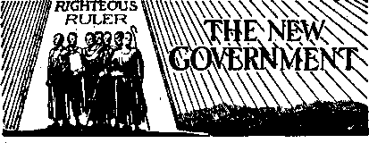

Counsel by J. F. Rutherford
Conspirators Divulge Agreement
British Comment
Department of Justice Inactive
The New Government
Witnessing in Shakespeare’s Birthplace
Stole, Lied, and Lost Her Money
Demonization at Rawlins, Wyoming
Under the Totalitarian Flag
Published every other Wednesday by
WATCHTOWER BIBLE AND TRACT SOCIETY, INC.
117 Adams St., Brooklyn, N. Y., U. S. A.
Editor Clayton J. Woodworth
Business Manas er Nathan H. Knorr
Five Cents a Copy
$1 a year in the United States fl.25 to Canada and all other countries
NOTICE TO SUBSCRIBERS
Remittances: For your own safety, remit by postal or express money order. When coin or currency is Jost In the ordinary mails, there is no redress. Remittances from countries other than those named below may be made to the Brooklyn office, but only by International postal money order.
Receipt of a new or renewal subscription will be acknowledged only when requested. Notice of Expiration Is sent with the journal one month before subscription expires. Please renew promptly to avoid loss of copies. Send change of address direct tq us rather than to the post office. Your request should reach us at least two weeks before the date of issue with which it is to take effect. Send your old as well as the new address. Copies will not be forwarded by the poet office to your new address unless extra postage is provided by you.
Published also In Afrikaans, Bohemian, Danish, Dutch, Finnish, French, German, Greek, Hungarian, Japanese, Norwegian, Polish, Portuguese, Spanish, Swedish, Ukrainian; also special Australian edition in English.
OFFICES FOR OTHER COUNTRIES
England 34 Craven Terrace, London, W. 2
Canada 40 Irwin Avenue. Toronto 5, Ontario
Australia 1 Beresford Road, Strathfield, N S W. South Africa 623 Boston House, Capo Town
Entered as .second-class matter at Brooklyn, N. Y., under the Act of March 3, 1379*
Petain and the Hierarchy
• An article in Reynolds News Oct. 20 is more than interesting. The writer* Marguerite Dasnieres, says, “The thin, quavering voice of a very old man, Marshal Petain, announced to the French people that the French State is now ‘hierarchical’—the latest and most retrogressive camouflage for totalitarian rule, but it would be wrong to think that this hackneyed paraphernalia (named by Petain in his announcement) signifies that the aged marshal is trying to curry favor with the Nazi conquerors. He is not.” The article claims that Petain is under the lead of others, in particular one Charles Maurras, a Roman Catholic, whose arduous and influential labors have for many years been directed to restore France, under a hereditary monarchy and the authority of the Roman Church, and she says, “This explains Petain’s choice of the word ‘hierarchical’ instead of ‘totalitarian’.” No doubt this states the truth, and there is no question that the Hierarchy in Rome has striven to bring France under their control, and to destroy democracy in that land.
The Catholic Herald, perturbed by news published about the pope and the Vatican, and referring particularly to the report of the pope blessing Mussolini’s army, says the press frequently gives garbled versions of events—which, of course, the Roman Catholic papers never do—says the pope’s words by no means bear the interpretation that he favors Italy, and it adds, “In view of the many attempts made by sources hostile to the church to suggest that the Vatican favors totalitarianism and condemns the parliamentary countries (whereas it remains completely neutral) these would do well to believe nothing that purports to come from the Vatican until its truth is amply confirmed.” But truth never found a home in the Vatican.-J'. Hemery.
“And in His name shall the nations hope.”—Matthew 12:21, A.R.V.
Volume XXII
Brooklyn, N. Y., Wednesday, December 11, 1940
Number 554
WHEN the child Jesus was born at Bethlehem it U’as the Devil and his associate demons who put the wicked Herod wise to that event in order that he could carry out the Devil’s scheme to destroy the babe Jesus, The magi, or ‘‘wise men”, who started the whispering campaign about the birth of a king, were clearly the servants of the Devil. The following facts prove this.
When the angel announced to Mary ( that she should bring forth a child whose ' name should be called Jesus and who would be the Savior of His people, Satan recognized this promised and unborn babe as the one who would ultimately bruise his, the Serpent’s, head, as foretold at Genesis 3:15. The apostle Paul states that God sent Jesus into the world, one of His missions being ultimately to destroy the Devil. (Read Hebrew's 2:14.) The enmity of Satan toward the promised One never abated. Learning of the promised birth of the child, Satan at once began to lay his plans for its destruction. He attempted to induce Mary’s espoused husband Joseph to put her away and cause her to be put to death as an adulteress under the terms of the Mosaic lawp but God prevented this by advising Joseph through His angelic messenger in a
DECEMBER 11, 1940 dream to fear not, but to take Mary fop his wife.—Matthew 1:18-24.
It seems unreasonable that the Creator Jehovah vrould have made a star move from the east and stand over the birthplace, Bethlehem. Stars do not move about the canopy of heaven in such manner as to lead men. Satan and his emissaries, the demons associated with him, have powrer to produce lights. Many instances are cited in history of these lights appearing near the earth. The “star'’ or light that guided the “-wise men” -was without doubt such a light, and not a star moved by the power of Jehovah.
The “wise men” residing in the east were sorcerers and magicians. They were star-gazers, followers of religion, or demonism. They sacrificed to and worshiped the Devil. (Read 1 Corinthians 10:20.) Pharaoh the king of ancient Egypt was a type of Satan the Devil; and Pharaoh used wise men like these magi in the day that the Israelites were in Egyptian bondage. (Exodus 7:11) These were devotees of astrology and demon worship. Doubtless many of them were sincere, but they w’ere the dupes of religion inaugurated by Satan. The Biblical record definitely fixes the fact that Herod, then ruler in Jerusalem, was a wicked man, under Satan’s influence.
“Now when Jesus was born in Bethlehem of Juda? a, in the days of Herod the king, behold, there came wise men, [(Greek) magi] from the east to Jerusalem, saying, Where is he that is born King of the Jews? for we have seen his star in the east, and are come to worship him,” “Then Herod privily called the Wise-men [magicians, religionists], and
3 learned of them exactly what time the star appeared.” (Matthew 2:1,2,7, A.R.V.) Be it noted that these wise men went directly to Herod, a representative of Satan, if the star guiding them was sent by the Lord Jehovah, why would He guide them to Herod, a representative of Satan, and a mortal enemy of the babe Jesus? If the sole purpose of the star was to guide these men to the place of Jesus’ birth, there was no need for them to go to Herod at all. The reasonable answer, then, is that Satan had prepared a great conspiracy with the object of destroying the babe. A conspiracy is a design to commit a wrongful act, in which two or more join in committing the act or some part of it. Sometimes persons are involved in a conspiracy and participate without knowing the real purpose of the one who forms the conspiracy. Such may have been the case with these wise men; but without doubt Satan had formed and directed it.
When these wise men came into Herod’s presence, he was troubled, because he feared the new king would interfere with his reign; and he “gathered all the chief priests and scribes of the people [clergymen, religionists] together, [and] demanded of them where Christ should be born”. Tn other words, he demanded to know where the babe Jesus could be found. Then Herod, in furtherance of the conspiracy, privately consulted with these wise men. We now see Herod manifesting one of Satan’s characteristics, to wit, deception, in th'at he pretended to desire to find the babe Jesus that he himself might go and worship Him; whereas all the facts and circumstances show that his real purpose was that he might find the babe in order to destroy Him. “And he sent them to Bethlehem;'and said, Go and search diligently for the young child; and when ye have found him, bring me word again, that I may come and worship him also. When they had heard the king, they departed: and, lo, the star, which they saw in-the east, went before them, till it came and stood over where the young child was.”
We cannot for a moment believe that the heavenly Father would use a wicked one like Herod and aid him in carrying out his wicked purpose by having a star to direct these wise men to the place of Jesus’ birth, in view of the fact that the king had demanded that they should return and report to him, and that it was King Herod’s purpose to destroy the “young child”. The fact is that the Devil and his instruments, Herod and others, would have succeeded in this wicked conspiracy and have caused the death of the child Jesus had not God interfered to save Him.-
Beaching Bethlehem, the wise men found the child and brought their presents and worshiped. Without a doubt it was their intention to return and report to Herod. The result of such a return would have been the death of the child. But God here intervened and warned them in a dream. These religious magicians relied upon dreams. “Being warned of God in a dream that they should not return to Herod, they departed into their own country another way.” Satan again was thwarted in his ■wicked purpose.
Herod’s real intent in sending these » wise men is disclosed by what subsequently happened, Herod’s slaughter of all the babes in and about Bethlehem two years old and under, with the hope of destroying the one that was to be King and Savior of the world. Jehovah saved the babe Jesus from the slaughter by directing Joseph and Mary to take the young child and flee into Egypt; which they did.—Matthew 2:13.
We would not be justified, then, in presuming God was using these devil worshipers, the “wise men”, for the purpose of being His witnesses to the birth of His beloved Son. On the contrary, the facts show it pleased Him to reveal this great truth to the shepherds and to use them as His witnesses.—Luke 2:8-18.
Nothing in the account of the wise
CONSOLATION men indicates that their mission was in any wise beneficial to mankind. This should serve as a warning to all who profess to be followers of Christ Jesus and who have been deceived by clergymen and been led to ignore the existence and power of the demons. Instead of following the admonition of the Scriptures, religionists known as “leaders” and the principal ones of their flock exalt these devil-worshipers or magicians by the ceremonies performed at what is called “Christmas time”. Without doubt Satan has deceived multitudes of honest people into believing these men were the witnesses of the Lord, and has hid from their minds the fact that they in truth and fact represented Satan. “We are not ignorant of his devices.”—2 Corinthians 2:11.
(In Two Parts—Part 1)
THE shameless mobbing of Jehovah’s witnesses by Legion-led rabble is shocking to every law-abiding citizen. This has not abated in the least, but, on the contrary, the office of the Watch Tower is furnished with a constantly increasing number of accounts of the most beastly and inhuman attacks on those whose only “offense” is to bring “this gospel of the kingdom” to the people. The contempt for such outrages, expressed by many news editors throughout the country, has had no effect, because when the law itself is no deterrent or hindrance it could not b’e expected that public disapproval would avail. The instigators of these crimes have set up a mobocracy and defied the nation to stop them.
Mobocracy means “rule by the lawless”; and the action of mobs is contrary to every law of the land. No honest citizen condones the casting away of all legal restraint, and the invoking of misrule by violence and rioting. To approve the attacks upon Jehovah’s witnesses which have been made without any effort to bring legal charges against them, and the assaults on all or any who dared to defend them as legal counsel or simply to render them some pitiably small courtesy or kindness, implies the sanction of crime. It likewise implies distrust and contempt of all the laws for which the American flag stands as symbol.
Yet today there are in America high
DECEMBER 11, 1940 religious and political officials who openly approve of these felonious assaults ami, furthermore, incite and promote more such violence. These same officials constantly salute with their hand America’s symbol of law. The success of their evil efforts would dismay the hearts of all who love righteousness, except for the Scriptural proof that this momentary triumph of wickedness just precedes Armageddon. At this final battle Jehovah settles accounts with all violators of His law. “When the wicked spring as the grass, and when all the workers of iniquity do flourish, it is that they shall be destroyed for ever. But thou, Lord, art most high for evermore. For, Jo; thine enemies, O Lord, for, lo, thine enemies shall perish: all the workers of iniquity shall be scattered.”—Psalm 92:7-9.
Jehovah's witnesses do not call attention to these facts for the benefit of the evil instigators, because these have already been found guilty and sentenced to death by Jehovah. (Matthew 25:45,46) But it-is their responsibility and duty to warn all those who might be innocently duped into following such leaders, that to do so means death at the hands of Jehovah. If any have joined such mobs who seek the death of the messengers of the Most High, let them quickly turn away from such action and make any amends they can, lest they fall into the hands of the living God, (Hebrews 10:31) “Kiss the Son, lest he be angry, and ye perish from the way, when his wrath is kindled but a little.”-—Psalm 2:12.
The words and action of religious bishops, political officials and Legion commanders disclose a conspiracy to carry into effect the silencing of Jehovah’s witnesses. Their initial effort was by ‘framing mischief by a law’. (Psalm 94:20) These laws, whose similar wording throughout the United States clearly disclosed their common origin, were disannulled and declared unconstitutional by the United States Supreme Court in the Lovell, Schneider, and Cantwell cases, all involving Jehovah’s witnesses. Then the conspirators seized upon the adverse court ruling on the flag-salute ease as a pretext for concerted mob violence, which reached such rabid proportions during the summer. The mobs, impassioned and incited bjr Boman propagandists, were relied upon to do what was forbidden by the ^nierican Constitution. Further evidence as to who are the chief actors in this conspiracy is disclosed by recent newspaper statements of those prominent in public affairs.
Conspirators Divulge Agreement
It has been found through experience in the prosecution of the law that conspirators will use the same words and often commit the same acts in the accomplishment of their unlawful purpose. This is W'ell known in law circles. In the assaults upon Jehovah’s witnesses certain similarities both in word and in deed appear which leave no doubt as to the motive and identity of the backers of the combine. Some of these points are here considered. ,
It was on May 23, 1940, that the conspirators started the Texas “blitzkrieg” to exterminate Jehovah's witnesses. Some sporadic attacks had occurred even a few days earlier. The time had come for action, and it appears to synchronize very closely with the Supreme Court decision against Jehovah’s witnesses which was handed down on June 3. Bear in mind the time element; these outrages occurred more than a week before this bad decision was made public. Could it not have been that a Catholic “justice” gave the boys the ‘GO’ signal a little before the general populace received the news? Or had the outcome already been decided upon a month or so before?
Whether or not that is true does not matter. Note now the further progress. Judge Rutherford, in his speech delivered from Detroit on .July 28, pointed out the coincidence that it was on June 1.0, only one week later, that two things happened. Mussolini stabbed France in the back, and National Commander of the American Legion, Raymond J. Kelly, called for summary action against Jehovah’s witnesses, whom he classed as “fifth columnists”. Everywhere the cry “Fifth columnists 1” was taken up. In less than a month overt acts of the conspirators had occurred in 41 states of the Union, doing violence to person and property of more than a thousand of the Lord’s servants.
All these facts are well known through newspaper exploitation, generally at the expense of the witnesses. Lies were hurled about pretty carelessly. A few corrections have been halfheartedly attempted, such as the New York Times’ correction that the witnesses attacked in Del Rio were Nazi agents. They knew it to be a lie when they published it, but wanted to curry favor with the Hierarchy and do their bit to inflame the country against the objects of the conspirators’ wrath.
At Detroit every spokesman for Jehovah’s witnesses charged the American Legion with complicity in the Hierarchy’s scheme to rid themselves of the witnesses. It might shake the confidence of some of this gang to note what Jehovah had to say about this arrangement a few thousand years ago: “For, lo, thine enemies make a tumult: and they that hate thee have lifted up the head. They have taken crafty counsel against thy people, and consulted against thy hidden ones. For they have- consulted together
with one consent: they are confederate against thee. Do unto them as unto the Midianites; as to Sisera, as to Jabin, at the brook of Kison.”(Psalm83.;2,3,5,9) Just in passing, Legionnaires will take note of just what happened to these ancient enemies of the Lord; says the prophet, “they became as dung for the earth.” (1.0th verse)
As far as this writer is informed from a scanning of news accounts, neither the Legion nor the Hierarchy have ever denied their confederacy formed for the purpose of exterminating Jehovah’s witnesses and replacing the American flag with the swastika. Instead they seem to be satisfied that all is progressing smoothly and the outrages are increased. This seems to be their answer. But if any doubt remained Archbishop Spellman’s recent outburst at the Legion convention in Boston (September 20) removed all shreds.
An Archbishop Incites Riot
On September 22 Spellman was working overtime. He reviewed “15,000 members of 56 Italian-American branches” of the “Holy Name Society”. These are connected with Fascist clubs, according to Il Mondo, Italian anti-Faseist weekly. The archbishop and a large gathering of priests reviewed the marchers from the steps of the expensive and elite Fifth Avenue cathedral, St. Patrick’s. The intimate relation between prelates and Legion is disclosed in this paragraph in the New York Times, September 23,1940:
A color guard composed of veterans from posts of the American Legion and Veterans of Foreign Wars also detached itself from the parade to stand at attention alongside the clergy. Religious banners were held aloft by some members of the guard of honor that formed on the cathedral steps . . .
At three o’clock Archbishop Spellman had to leave the cathedral steps to depart for Boston.
On arrival in Boston the archbishop lost no time in having his picture taken with Governor Saltonstall and none oth-
DECEMBER 11, 1940 er than Raymond J. Kelly, the advocate of summary action against Jehovah’s witnesses. In the speech which this agent of a foreign power gave to the Legion, he pleaded “for an armed nation to save our peace”. Strangely enough, he did not mention Germany, Italy or Japan as the encroaching enemies, but he made unmistakable reference to Jehovah’s witnesses when he used these words :
You cannot imagine an organization which openly teaches disrespect to the American flag and under the pretense of freedom of religion engages paid workers to go from house to house to attack the religion of others. And yet there is such an organization.
By vocation I am a man of peace . . . Unceasingly day and night I pray and ask my flock to pray for peace. “There is nothing to be gained by war that cannot be gained by peace,” was the warning of Pius XII on the eve of the outbreak of the present European conflict.
Note how Jehovah foretold the words of such prognosticators : “Saying, Peace, peace; when there is no peace. We looked for peace, but no good came; and for a time of health, and behold trouble!”— Jeremiah 8:11,15.
But Spellman advocated no peace in the Legion’s mobbing of Jehovah’s witnesses. Of course, the statements are all untrue: Jehovah’s witnesses respect the flag far more than any Catholic prelate who is working overtime to turn the country over to the Nazis; and they engage no paid workers to attack the religion of others. Jehovah’s witnesses respect everything in this nation that is worthy of respect, but that does not include the promulgators of the religious lie that God has a place of torment for all those who do not tickle the palm of some skirted cleric. Abraham Lincoln had the same opinion as Jehovah’s witnesses on this point, and even the Catholics pretend to revere his memory as a great American. Lincoln said:
The history of the last thousand years tells us that wherever the Church of Rome is not
a dagger to pierce the bosom of a free nation, she is a stone to her neck and a ball to her feet, to paralyze her and prevent her advancement in the ways of civilization, science, intelli'-gence, happiness and liberty. Though not a prophet, I see a very dark cloud on our horizon. And that dark cloud is coming from Rome. It is filled with tears of blood. It will rise and increase till its flanks will be torn by a flash of lightning, followed by a fearful peal of thunder. Then a cyclone, such as the world has never seen, will pass over this country, spreading ruin and desolation from North and South. After it is over, there will be long days of peace and prosperity; for popery, with its Jesuits and merciless Inquisition, will have been for ever swept from our country.
On the occasion of his speech to the Legion, some pronouncement regarding their attacks on Jehovah’s witnesses was expected by Legionnaires from Spellman. After all, they had not succeeded in killing all the women and children whom they had mobbed, but surely the “good” bishop must realize that it was harder to do this sort of work here than it was in Germany with a staunch Catholic like Hitler at the helm. So they looked to the archbishop for some words of comfort and encouragement much needed if they were to keep up the brave performance of beating up the outnumbered men, women anil small children of Jehovah’s witnesses. Even some members of the Legion opposed mob action, so the job was not all as easy as smashing the face of a little girl.
And the archbishop came through with a splendid vote of confidence for his boys. He really spread himself. He knew the gang had done what they could, and, furthermore, he expected even better results in the future. For the organization whose members advocate felonious assault upon the weak and infirm in stead of obedience to law, do not these words of praise seem somewhat extravagant?—
“Your honor is forever secure. Tn military annals you belong to the company of the most knightly who fought without fear, without reproach and without thought of personal gain or national expansion.” This eulogy was addressed to the American Legion by Spellman, and while it sounds brave and laudatory enough, it doesn’t seem to fit the Legion, many of whom never came closer to fighting than in a Texas riot. But the Legion, no matter how despicable in the eyes of the law-abiding, immensely pleases the Roman Catholic Hierarchy, whose agent addressed them.
Honest people cannot fathom the intrigues and cryptic phrases of the Papacy. But one thing is clear in Spellman’s speech: there is not one hint of censure of the Legion, but, on the contrary, it was plain to all who had ears that their past conduct, including the vicious attacks on law-abiding citizens, was held in the highest esteem by the Roman Catholic Hierarchy, represented by the archbishop. In plain language, what he meant was “You are doing a swell job, boys. Keep it up. You know the ones I want you to get; so go after them.”
The same words, the same acts, and the same targets, namely, those who truly represent Jehovah, are used the world over. The words are “Disrespect of flag”, “Fifth Columnists,” “Hiding behind religion,” and it does not make any difference which flag it is or what country is being betrayed by “Fifth Columnists” who disguise their sedition under “a cloak of religion”. A few examples cited from distant places will show how perfectly the conspiracy is directed from a central office.
Smith Weekly of Australia, issue .of July 27, states;
Menace of “Jehovah’s witnesses” Is Reauzed. Mr. Tanking, N.S.yf. [New South Wales, the state of Australia in which Sydney is located], Chief Secretary, has publicly declared the organization to be fifth columnist. The news sheet has a rehash of American attacks on the witnesses and says further:
In America lately, “Witnesses” have been causing riots through their unpatriotic and
CONSOLATION
irritating activities. In recent weeks, scores of them have been gaoled as alleged spies, radicals, fifth columnists, and non-patriots. The writer also uses the stock term of the Hierarchy in this country, “subversive.” The fact that'Jehovah’s witnesses do not salute any flag or "heil” any man, whether it be American, British or German, would seem to refute the charge of “Fifth columnist” in the eyes of any sensible creature, even without the added evidence that Hitler has banned the organization in Germany and killed many witnesses. But no, the Hierarchy’s agents around the world repeat the charge except that in Germany they are accused of being “fifth columnists against the German Fifth Columnists”.
Also any flag will do. Note how the American and the Australian news swap items which reproach Jehovah’s name. The New York Herald Tribune of September 20 carries this item:
■ Religion No Exemption fob Sect in Australia. [Sydney, N.S.W.] Sect Spokesman Manhandled.
Hobart, Tasmania [a beautiful island south of Australia and under the central government], Sept. 19. (AAP)—A spokesman for the Jehovah’s witnesses sect, who refused to rise for the singing of the national anthem, was dragged from a platform here today by twenty young men and tossed into a roadway. Bleeding from cuts, the spokesman returned to the platform. After refusing again to stand for the anthem, he was threatened by the crowd, but escaped in an automobile. Several of his followers were showered with rotten eggs and other missiles. i
Now consider the words of a publication in Coughlin’s stamping ground, Detroit, Michigan, some 11,000 miles from Tasmania. An editorial in the Strathmoor Press, August 1, 1940, accuses: “Jehovah’s Witnesses is the first religious tribe to be so closely akin to Fifth Column activity.” This editorial also uses the expression “Hitler’s tactics”.
Canada has suppressed Jehovah’s witnesses as “fifth columnists” and as “subversive”. It is well understood in Canada
DECEMBER 11, 1940 that this move was at the instance of the powerful Quebec bloc of Catholics whose unity makes them politically an almost insuperable minority. The facts of the case are difficult to get, because of the close censorship now imposed. But one probable theory has been advanced. Canada’s Catholic gnti-British sympathy in 1914-18 prevented the passage of a draft act. In the present conflict the same Quebec clique opposed the draft for a similar reason. The Catholic mayor of Montreal, even after the passage of the act, boldly declared it unconstitutional. To effect passage of the draft act a compromise between Canada’s four and one-half million Catholics and seven million disorganized opposing groups was needed. The final arrangement seems" to have been something like this : The Hierarchy, represented by their strong political adherents, was to have a Catholic in the saddle as dictator (Lapointe, Minister of Justice, and practical dictator, is a staunch Catholic) and license to suppress Jehovah’s witnesses : and the other side, Protestants, and the like, were to have the draft. The facts seem to warrant the conclusion that this explanation is correct.1 Canada thus puts herself in the fatal position of fighting against God.—Psalm 9:17.
The Hierarchy, through Hitler, has succeeded in stopping the work of Jehovah’s witnesses in practically all of Continental Europe.
That Hitler has dqne the will of the
Hierarchy in the suppression of Jehovah’s witnesses is unquestionable from facts published in 1938 in the booklet Face, the Facts. Under the subhead “Hitler and the Pope” the following is quoted: The following statement, written by a Catholic priest of Berlin and published in The German Way under date of May 29, 1938, is proof of the conspiracy between the Papacy and the Hitler totalitarian government of Germany:
“There is now one country on earth where the so-called ‘Earnest Bible Students’ [Jehovah’s witnesses] are forbidden. That is Germany! The dissolution of the sect which, at that time, had found a strong foothold in Germany, did not come to pass under Bruning [chancellor of the German Reich before Hitler], although the Catholic Church in Bruning’s time urged to have this done. However, the Ttfost Catholic Chancellor’ Bruning answered that he had ho law which authorized him to dissolve the sect of the ‘Earnest Bible Students’.
“When ^.dolph Hitler had come to power and the German, episcopate repeated their request, Hitler said: ‘These so-called “Earnest Bible Students” are troublemakers; they disturb the harmonious life amongst the Germans; I consider them quacks; 1 do not tolerate that the German Catholics be besmirched in such manner by this American “Judge” Rutherford; I dissolve the “Earnest Bible Students” in Germany ; their property 1 dedicate to the people’s welfare; I will have all their literature confiscated.’ Bravo !t
“However, the American episcopate, even Cardinal Mundelein, is not able to have Rutherford’s books, in which the Catholic Church is slandered, to be taken away from the bhok-markct in the United States.”
Cardinal Mundelein is now conveniently dead. Archbishop Hayes, also now deceased, has been replaced by Paeelli’s personal friend, Francis J. Spellman. The archbishop is moving fast to remove the complaint of the German priest. Pacelli, too, is rubbing his hands in gleeful expectation of the day when the progress of the “new order” in Europe will be
10 t duplicated in the United States. The faithful Legion under the guidance of his Italian priesthood can be counted on to lift the ‘blight1 of Jehovah’s witnesses.
March of Mobocracy
Given a free hand the Hierarchy is quick to don the garments of the ancient Inquisition. The methods are those calculated to inspire terror and bring about “peace and safety” in America in which the Homan Catholic Hierarchy will be free from the disturbance of exposure. Some may think these methods extreme, but the rule of the Hierarchy is that no crime is too unspeakable when committed upon an enemy.
The most damnable aspect of these atrocities is the close alliance between priests, officials, judges and the American Legion. To top it all is the connivance of the president of the United States. iVccording to Lowell Thomas in his chain broadcast over WJZ, October 1, Mr. Roosevelt described the attacks on audiences of Mr. Willkie, the Republican candidate for president, as “reprehensible”. As for the shameless mobbings of Jehovah’s witnesses, not only was the chief executive silent, but he wined and dined one of the leading instigators. The New7 York Times of August 29, 1940, reveals an intimate relationship:
Archbishop Spellman of New York was entertained today at luncheon by President Roosevelt soon after the President arrived here [Hyde Park] for a holiday. The luncheon was private and neither the topics of conversation por the names of the other guests wore made public.
The president is similarly reticent about his conferences with Myron C. Taylor, his personal ambassador to the Vatican; but the American public is permitted to witness the results of some of those little private talks. Further results of these confabs may be expected in the near future.
America is far more advanced than England in the destruction of freedom and the substitution of mob rule. While
CONSOLATION
the Catholics both in England and in Scotland have attempted to create prejudice against the witnesses by calling them “conchies”, “subversive agents” (a favorite term of the Hierarchy’s), and “Nazi sympathizers” (Scottish Daily Express, September 14, 1940), the press of the British Isles is fair enough generally to publish the answers of Jehovah’s witnesses to such charges. Says the above paper, for instance:
Thousands of Jehovah’s Witnesses in this count ry, members of an American-born group of ‘Bible Searchers’, who have been called “conchies”, “subversive agents,” “Nazi sympathizers,” intend to reply to their accusers at a conference this week-end at Edinburgh. Their reply will be: .
“(1) We have never dictated to witnesses’ consciences, never held an objection-i complex, never interfered with individual freedom in the matter.
“(2) We are decidedly not subversive. We are not interested in politics, only and exclusively in God and preaching the Gospel.
“(3) Six thousand of our members are in German concentration eamps. We could hardly be pr o-Nazi.”
The Scotsman, September Ifi, quotes:
The British public today asked these questions: “Who are these witnesses? What do they stand for!”
Mr. Schroeder [convention chairman] replied that they were a body of true Christians. Jehovah’s witnesses were not pacifists, but were soldiers of Jesus Christ. They were peaceful, loyal, and law-abiding citizens of the State.
“The best answer to the slander that Jehovah’s witnesses are a ‘bunch of cranks’,” said Mr. Schroeder, “is to look at this vast audience and see the bright, healthy men and women who compose it. Bo they look like a bunch of eranks? These are men and women who love God.” ,
It should be clearly known, he proceeded, that the Society, as an organization, was not interested in the question of conscientious objection, and had not interfered with,its mem-
DECEMBER 11, 1940 bens in this matter. If an individual had an objection to war, it was up to the individual himself to make his stand.
An English prelate was also forced to publicly retract the statement that Jehovah’s witnesses were against the government and to pay a fine of £10. On another occasion a group of Catholic hoodlums attacked Jehovah’s witnesses and were arrested by fair-minded police and punished with sentences.
Contrast this situation in a country ripped by Nazi bombs and in constant danger of invasion with the events in Harlan, Kentucky, and Connersville, Indiana, U.S.A. At Harlan six of Jehovah’s witnesses are charged with the serious crime of sedition because they “advocated a government by one, Jehovah God”. Do not all Christians advocate such a government when they pray as Jesus taught them to pray: “Thy kingdom come. Thy will be done in earth, as it is in heaven”?—Matthew 6:10.
In Connersville two ladies were arrested who had witnessed for many years to Jehovah’s kingdom and were well-known citizens. They were tried and, even after an able defense, convicted of “conspiracy to riot” on an antiquated and apparently unconstitutional law; the sentence for preaching the gospel was “two to ten years” imprisonment. Even then the bloodthirstiness of the Legion-incited mob was not satisfied. Due to the intense prejudice ^whipped up in this town, counsel for the defense was forced to use a back door during the trial. The courtroom was customarily filled with Jehovah’s witnesses interested in ' the case. Just before the jury handed down the verdict, which was “cut and dried” from the beginning, the judge ordered the courtroom cleared. When the defense counsel, his wife and several friends returned in the evening to learn the verdict, they noted knots of men on street corners who jeered at them and cast rotten eggs and other missiles. Other mobsters lined the corridors of the courthouse. Enemies had replaced friends in-
side. After the verdiet, when the group attempted to glude the rioters by use of the back door they found this locked. There was but one exit left, and this led them into the hands of a howling mob. The judge had thrdWn them to the wolves.
No police could be found. They had conveniently disappeared. The surging crowd began to beat men and women alike, cursing and blaspheming Jehovah’s name. The attorney and his wife were separated from the two other of Jehovah’s witnesses. The car in which they had intended to escape had been driven away by Legion members. The woman was bleeding from cuts, and swollen about the face and breast from a torrent of blows. Loss of blood caused the lawyer to be so weak he was scarcely able to support his wife as they were driven through the rain towards the outskirts of the town. After hours of this torment, finally a friendly car picked up the couple. The two other friends were later rescued after receiving a terrible lashing and internal injuries. As to the instigators, both the judge and the prosecuting attorney admitted that they took orders from the Legion.
It seems certain that we have just begun to see the beginning of this terror. The bludgeon, the torch and the ax are on the march. Mobs are demonized and cannot be dealt with. Their unleashed fury is like a forest fire devastating everything in its wake. It is sated neither by victims nor by blood. It is the Devil’s own spawn and will obey his voice alone. This is the program for America under the heel of Catholic Action!
There is yet a more grisly example on record. This concerns the unspeakable crime of castration. In Nebraska a witness received an afternoon visit from several men posing as friends. They said, ‘We are Jehovah’s witnesses like yourself.’ The witness thus addressed stepped outside to welcome the visitors, and he was suddenly grabbed and forced to go with the gang. Their intentions §0011 became obvious as he was thrown on the
12
ground in a near-by grove and forcibly castrated with a butcher knife. One of the tormentors shouted to the man writhing in agony: “That will teach you a lesson.”
The same organization that perpetrates such acts accuses Jehovah of even greater fiendishness.—-Elton Groves.
(To be continued)
British Comment
By J. Hemery (London')
• The bishop of Chelmsford, Essex, has caused a commotion amongst the Roman Catholics, and has given their newspapers and journals something to write about, and the priests something to talk about a bit different from the usual rather maudlin pabulum which is dished out to their readers and hearers. At a diocesan meeting the bishop expressed himself freely about the Papacy and its attitude towards the war. He said, “One of the most melancholy aspects of the European situation is the abject failure of the pope to give spiritual guidance to the people who looked to him for spiritual leadership. The fact is (he said) that the Papacy is now, as was the case in the last war, and indeed always has been in the past 400 years, anti-British and antidemocratic. It is tragic that this is so, for otherwise the intervention of an influential neutral whose power was purely spiritual might shorten the war; but as things are, any peace proposals from Rome would now be fatally suspect.” Despite the outcry from the Roman Catholic newspapers and the many letters which have appeared condemning his plain words, both in the national newspapers and in personal letters, the . bishop holds to his words. The Catholics tell at full length all the fine speeches made both by the late pope and by the
. CONSOLATION
present holder of that office. They have many to quote of the pope’s love for peace, and of the heartaches, about which they tell, which give the "holy father” so much suffering. But none of these meet the statement of the bishop, nor touch the essential matter, which is that the Papacy is ever totalitarian in spirit and is contrary to democracy in whatever form it is found. Protestantism, though not now active as such, is a rejection of the claims of the totalitarian Roman church claims, and ever since Britain asserted its freedom from the thraldom of the Papacy its manner of life has been that ol a democracy, no matter what particular,, phase of rule has happened. The Papacy has of late told the world of its admiration of the great democracies of the West, Britain and America, but those whose eyes are opened to the workings of the Papal Hierarchy as a great political power and schemer know how to measure the words of the pope’s expressions, and such, remembering that the cabinet in Rome is working in the secrets of the Vatican, remember that its policies efnanate front Italians. The Hierarchy ever keeps before the eyes of the world the “church” with its spokesman, the ‘holy father1, who claims to be ruler of all who are baptized in the Christian faith, and that whether baptized by a Roman Catholic priest or an alien Protestant parson. That great system, whose roots are in all places in the earth, hates and seeks to destroy all opposition to its claims, and it hates Protestantism, which from thatangleisessentially democratic, as it. hates Jewry and Freemasonry, neither of which accept the claims of the Papacy. It particularly hates the -witness given by Jehovah’s witnesses against its false claim, because its unscripturalness, and its false interpretations of the Scriptures in its own support, its additions to the Scriptures to deceive the people, and its scheming political intrigues, are exposed as never before; and it hates the spokesman, Judge Rutherford, whom God has raised up for His purpose in DECEMBER 11, 1940 making clear the scheming and also in telling so clearly that which is the truth of the Word of God, so that both the error and the truth are set before the eyes of all who wish to know them in order to serve God, and save themselves in this day of judgment from the things which are coming on the earth in the collapse of Armageddon.
• Neither the Roman Catholics nor their relatives, the parsons of the Anglican church,'appear able to tell the truth when Jehovah’s witnesses are the subject of their words or writings. The. vicar of Emmanuel Church, Northwood, near London, by title and name "Reverend” J. G. Downward, issues a vvarning to his parishioners about the books carried to them by Jehovah’s -witnesses. He says, "Much of their writing is contrary to Scripture,” which is not true;' he says, "They hold no belief in the Trinity”; which is certainly true. "They hold no belief in the resurrection of the Lord Jesus Christ”; which must be designated as a plain lie; and further .says, “They hold no belief in the all-sufficiency of the atonement as a guarantee of everlasting life”; which is another one. Why does not the parson read for himself instead of taking another parson’s word? He ought to knowr his own kind, and that, when the interests of their church are in question, none of them is to be trusted, as he himself demonstrates. The parishioners w?ho have been under the vicar’s care are reading for themselves and are getting free from the bondage which the priests have put on the people. The vicar must know this, or this wmming would not have got into his magazine, The profession of clergymen brings its holders into a false position; for, whether of the Roman or of the Anglican or of the Nonconformist sections, they are forced into a confession of faith and doctrines designed to support the institutions they represent, professing to build upon the Word of God, but each taking out of it
such passages as support their particular dogmas or practices, and refusing all that does not happen to agree, or using them as mere illustrations for the moralizing they pass on to their congregations week by week. And in all the ranks of so-called “Protestants”, were inquiry to he made, it would certainly be found that all, or nearly all, the parsons and preachers are non-accepters of the Bible as the Word of God. .
• From the time.-when the Nazis began their preparation for continuing their Blitzkrieg to Britain there has been no cessation of the daily and nightly attacks on England, chifefly on districts in the North-West and Midlands, but particularly on London. By one of their easy ways of justifying the wholesale destruction of the great area of the city and suburbs, and their indiscriminate wrecking of the homes of the people, and the slaughtering of as many persons as possible, they made London a “military objective”. That, to them, let them free for all that the evil conceptions and passions desired. Undoubtedly they have got much of what they wanted in scattering d’eath and destruction, and in making attempts to interfere greatly with the business, of the great city. Thousands have been killed; many more severely injured; thousands of homes have been wrecked or rendered uninhabitable. But that for which all this was intended, the breaking of the spirit of the people, and the panic which they hoped to create, with agitation to upset the Government, and perhaps influence its destruction and let in others who, as the Nazis thought, might have the same craven spirit or policy of those who led France into the power of the Nazis so readily—in that it may truly be said they have met with total failure. So far as one can read the signs, there is not the least impression made on the people, who at the first gave their full support to the Government when war on Nazism was declared.
14
The destruction in every area of London and the suburbs, and the towns between it and the sea, is a saddening sight, especially as one thinks of the homes wrecked and businesses, the means of livelihood, ruined. Yet London “carries on”, and so do the other towns and cities. Great numbers of the people in London spend their nights in the shelters; most of these go into the Tube stations, taking their places from 4:30 in the afternoon till the “All clear” signal goes, perhaps about 6 o’clock next morning. Many go into public shelters, and, again, many into shelters made in their gardens.
This provides safety, generally, but it almost seems that there is no safety to be got from a direct hit by a heavy bomb, and some have lost life or been badly injured even when “sheltered”. But while these shelters are giving a good measure of present safety, serious problems are arising. The nights are growing longer, and the questions of sanitation and feeding loom up; besides the evident fact that nights spent in shelters where sufficient rest cannot possibly be got must certainly weaken the health of the people.
The weather has been unusually mild: Britain as a whole has had one of its occasional good summers, and this has been favorable to the people. Almost all the nights of the “harvest” moon in September and the “hunter’s” moon in October were clear; but this favored the enemy bombers, for London lay clear to them. As yet, with the exception of increased number and power of the antiaircraft guns, it appears that little can be done to stop the night murderers. The tremendous noise of the guns precludes sleep, except to such as are “seven sleepers”, and the power of their explosions shakes the properties they protect. However, it is certain that the raiding would have been much worse if the barrage had not been in action. It is still the case that hospitals and churches seem to get particular notice by the Nazis, though perhaps this is because any outstanding
CONSOLATION building attracts the enemy. The end is not in sight, but perhaps the fogs which London gets at this time of the year may ( bring some relief. Nature, by its clouds, may prove a protection. A few nights ago, during such a night as seemed likely to give the Nazis a good run from early evening till well on to morning, there was first a clear sky with a bright moon shining, yet after a few hours clouds came over the heavens. The Nazis dared not come below the clouds, and over them where they roamed they could not tell where London was, except by guessing, and the bombers went back to their dens, to wait for early morning. But though they then come over in droves they know they must fight their way through the air, and during the daylight they and their terrors can be dealt with.
♦ Alexander Barmine, former Soviet . charge d’affaires at Athens, states that the reason why Stahn murdered 30,000 Russian officers, thus destroying Russian military effectiveness, is that Stalin had long contemplated an alliance with Hitler and wanted to remove all who he knew would object to such an arrangement.
♦ At the state hospital for the insane at Salem, Oregon, inmates were received faster than the state'provided quarters for them, with the unhappy result that an insane man killed three others insane and then committed suicide, all because of the fact that the beds were put too close together.
AMERICAN mobs are doing to Americans in America preciselyr what the Nazi Brown Shirts did to Germans in Germany. The spirit is exactly the same; the inciters are the same; the objective is the same; the results will be - the same. The Department of Justice knows this to be true. It has issued no indictments against the scores of flagrant malefactors in almost every State in the Union; but it has done some talking, and that is worth something. In a recent address Solicitor General Biddle said:
The increasing cases of mob violence in connection with the Jehovah’s witnesses must arouse the deep concern of every American citizen. As part of their religious creed, they consider it improper to offer obeisance to anyone but their Creator, and refuse, as a consequence, to salute the flag. To us, to whom the flag means so much that is passionate and beautiful, I can see how this attitude is deeply offensive. But what happened ? Selfconstituted mobs are roaming the country, setting upon these people, driving them out of their homes. In one instance, a sheriff, pretending to lead them out of harm, brought them straight to where the mob was waiting.
Some people of good-will toward God are slowly awakening. The Michigan Christian Advocate stirred its readers mightily with its editorial quoted in part in Consolation DECEMBER 11, 1940
No. 552. Letters from its subscribers thereafter expressed their keen interest in the dignified, graceful, pleasant manners of some of the young witnesses on the streets of Ann Arbor, where they were glad, not sorry, to wear “big sashes over one shoulder with ‘Jehovah’s witnesses’ printed on them in large capitals”. The Advocate’s subscribers wonder why Methodists cannot get their church members to do the same kind of work. The very first consideration is that one must have a supreme love for God. Unselfish devotion to God, first, last, and all the time, is what presses Jehovah’s people into the battle and makes them unafraid of consequences.
, The Louisville Courier-Journal states that the only WPA worker in Kentucky to lose his job when the rolls were cleared of aliens was one of Jehovah’s witnesses. That is all regular. What else would you expect? Mrs. F. L. Herington, California, did not hit it so badly when she said, in the Lodi Times: “The persecution of Jehovah’s witnesses is not an upsurge of patriotism, but of hatred against faithful people of God.” There is real joy on the part of the Devil, and on those who have the spirit of the Devil, when anybody loses his faith in God and becomes like the rest of mankind, thankless and unbelieving.
JEHOVAH’S witnesses lead the most interesting and exciting lives of any people.
They are the special objects of Satan’s wrath; he knows it, and they know it. Big events are impending. With calmness of mind and heart Jehovah’s people await what may come. “Is anything too hard for Jehovah?”—Genesis 18:14, A.R.V.
Some Americans are getting tired of too much big-mouth “patriotism”. Collier’s puts it like this;
Professional patriots are yawping that we’ve all got to take to saluting the flag at the drop of a hat—any hat anywhere—and the Supreme Court, no less, fell for one aspect of this guff in the recent Jehovah’s witnesses decision.
Persecution in Nigeria
In every country the Devil has his emissaries. In Ilesha, Nigeria, 33 of Jehovah’s wit' nesses were arrested, but the magistrate decided they had done nothing amiss, and discharged them. The dispatch from Lagos, Nigeria, says:
The native authorities are urged to see that they establish their case well before effecting arrests, since it is a waste of time and money to transport accused persons from Ilesha to Ife, and hack to their original destination, as is the experience of the men involved in this case. The discharged Jehovah’s witnesses have since been “glorifying” their Lord and Maker.
At Kingston, Ontario, Magistrate James B. Garvin (“church” unknown) is making it warm for the witnesses. The Kingdom Hall of the witnesses was raided and Charles Barney was given thirty days in prison on the following splendid testimony in his behalf given by the man who swore away his liberties:
I arrived at the hall, and we could not get the key so as to enter the hall. Charles Barney came up the stairs and asked what we wanted. We asked for a key and he produced one. We entered the hall with Barney and there was no other person in the hall. I asked Barney why he visited the hall and he said be called for a fresh supply of literature. I asked him if he had seen that the Jehovah Witnesses had been declared an illegal organization atid he said “Yes.” I asked him why he called for literature, and he said he wanted more for dis. tribute on. He said'it would make no difference whether the organization was declared an illegal organization, and that he stilt would be one. I asked him if he would always belong to that organization and he replied, “Absolutely.” He said that he would carry on with their teachings at the first opportunity.
After this appeared, a subscriber of the Kingston Whig-Standard, L. M. England, caustically and reasonably wanted to know. “What is the next religious organization to be called in question and brought to the court?” No doubt Mr. Garvin has the answer. Two days later Mr. Garvin sentenced Austin Ileld to ten days in jail on the same charge, and in this ease the testimony convicting him was this:
I asked him his name, and told him that he was a member of an illegal organization; and he told me that in his estimation the organization was not illegal. He further said that the organization would not be declared illegal until Jehovah had decreed it. I placed him under arrest and seized his boat and bicycle.
Sanity in Louisville
In the general wave of intolerance against the witnesses it is encouraging to note the courageous stand of the Louisville Times. After noting the case of one of Jehovah’s witnesses it said with the candor of the days when the men were'men that:
Jehovah’s Witnesses have been abused by mobs and public officials of late because their religion forbids them to salute any temporal emblem, including the. flag. Many police officials have gone out of their way to bait them and the arrests have been pure persecution. The Supreme Court has held that school boards have a right to compel flag salutes, but that does not mean that street mobs have that authority nor that public officials can, without reason or upon whim, harass believers in what, to the majority, may be a strange faith. It will be no surprise if Justice Stove’s dissent from the majority opinion in this case some day becomes the law of the land.
You beard about Roseburg, Oregon? Looking over their school board, and quite probably realizing that none of them had any education worth mentioning, the board solemnly decided that it were better so, and thereupon passed a resolution that no one may have any education in Roseburg henceforth unless he violates his conscience by saluting the flag. It is a great way to develop and perpetuate patriotism. It is like a mother beating a child consolation
Theocracy publishers, Colon and Panama
black-and-blue to make him love her more.
At Lumberton, North Carolina, Eugene 1). Orrell, one of Jehovah's witnesses, was arrested and held under $100 bond for distributing handbills without a license. The Charlotte (N.C.) iVws had a stirring editorial on this outrage. After mentioning that from one end of the country' to the other the people of various states have been disgracing themselves by hysterical assaults on the rights, property and persons of Jehovah’s witnesses, and then what happened to Orrell at Lumberton, it said:
The whole procedure is grossly and flagrantly illegal. There is no law of North Carolina or of the United States which requires this man to salute , the flag, and there can not be so long as the Bill of Hights is not overridden. . . . This man is being held for a nonexistent crime—which is to say ultimately because the authorities at. Lumberton don’t like his ideas and are usurping the authority to make laws against him on their own account.
Injustice in Britain Too
Americans think, and properly, that British courts are mostly more fair than their own, but at Manchester Judge Frankland seems to have it specially in for Jehovah’s witnesses and was small enough and mean enough to say to one of the witnesses in open court;
The more 1 hear of you people the more I am convinced that there is a good deal of sound wisdom in the Roman Catholic doctrine of keeping the Bible out of the hands of the ignorant. They are not fit to receive it.
Frankland wants his country to give up DECEMBER 11, 1940 trying to educate anybody. Let the Roman Catholic priests alone have any education; make it only' what they have to have to get by, and let them do all the thinking for the balance of the people, including such judges as himself. That seems to be his idea.
The Catholic Universe Bulletin boasts joyfully that Roman Catholic judges are socking it to Jehovah’s witnesses all over the Godforsaken province of Quebec. Judge J. C. Langlois, on sentencing a 55-year-old witness, W. A. Mallette, to a month in jail, declared that all the pamphlets and documents published by the witnesses of Jehovah are of a seditious nature. They (Judge Rutherford’s books) each contain upward of 1,000 Scripture citations. That’s enough. That makes them seditious. Don’t gubss Judge Langlois’ church. You don’t have to. He received that with his mother’s milk and that was as far as he got.
America has some judicial lights, also. A dispatch from Portland, Maine, tells that it took ^several hours of search for legal authority” for the chief of police of that city to take down a sign of Jehovah’s witnesses, which he had no more right to remove than one of the witnesses would have had to go into his office and remove the braid from his uniform. The chief did not fool anybody, not even himself, when he finally' argued that removal of the sign would prevent crowds In the streets in front of the building. Are there any crowds in front of theater buildings, churches, baseball grounds?
Too Much “Red-blooded” Bunk
Every twenty-four hours many scores of Americans rush into print with the deelaration that they are “red-blooded” Americans and they want to beat up somebody who doesn’t see things the way they do. That is the way Hitler worked. Terry Baum, Beverly Hills, California, put it this way in the Los Angeles Herald-Express;
My blood boils when I read of so-called “red-blooded Americans” who condemn the members of a religious sect because their teachings forbid them to salute a man-made symbol such as the American flag. To me this represents the height of hypocrisy, for no “red-blooded American” would show so little balance, I have been horrified at reports of physical injury inflicted on members of the Jehovah’s witnesses groups in some localities under the pretext of patriotism. Actually this is the same spirit found in a lynch mob. Is it fair to ask these people to violate their religious teachings just because they comprise a minority? After all, the mere saluting of the American flag doesn’t make one a good citizen. It is much more important to have respect for such American ideals as liberty and tolerance.
Just so as to be in style, fifty "red-blooded” hoodlums ganged up on three of Jehovah’s witnesses in St. Louis. The police knew about the mob; they were aware of the threat of the mob to “run them off Cherokee street”, and so they arrested—well, whom do you suppose ? Why, they arrested the witnesses, of .course. If you had the idea that police are expected to arrest lawbreakers and protect the lawabiding, you need the education you are going to get when the totalitarian gang have the entire country by the neck. The St.. Louis Star Times sees things coming. It doesn’t like the looks of them, and so it said editorially:
' CIVIL LIBERTIES IN RETREAT
Last Saturday night some fifty persons in St. Louis menacingly surrounded three members of Jehovah’s witnesses who were distributing their literature and threatened “to run them off Cherokee street”. None of these fifty persons was a police officer. None had been deputized. None was authorized to take the law in his own hands and interfere with other citizens.
This crowd is not absolved from guilt in this exhibition because the Witnesses were arrested and none of them [none of the rioters] was. By indulging in an exercise of unorganized mob violence, whether by the tyranny of act or word, they disturbed the peace and conducted an onslaught against the Bill of Rights. What happened on Cherokee street is typical of what is happening throughout the nation.
Ventnor, N.J., has a new shrine. It is in honor of the chief of police, Maurice C. Mower, who has set himself up in place of God. Nobody may publish the Kingdom message in Ventnor any more. If Jesus Christ visited Ventnor now He would not be able to preach, even by phonograph. The chief would confiscate His records and literature and lock Him up as a disorderly person unless He got out of town immediately when He was ordered out. It’s quite something to have an important jobGike that!
Even Portland, Maine, is better than that. In Portland they did give a man thirty days in jail for throwing a missile through the window of the meeting place of Jehovah’s witnesses. But they offset it by firing the probation officer of the county because his wife believes the Bible and is therefore one of the witnesses.
♦ The Lake Wales (Fla.) Daily, having been misled regarding the work of Jehovah’s witnesses, and even going so far as to ask that the witnesses working in their city be reported to them, had the manhood a few days later to say;
Contrary to reports, Jehovah’s witnesses are against “isms”, and we quote from their literature: “Fascism, Nazism, and Communism all mean the same thing, because all are for totalitarian rule and all are against God and Christ His King and all persecute the faithful followers of the Lord Jesus Christ. This evidence is cited to show the deadly conflict between Fascism and freedom.”
Jehovah’s witnesses in many places lose their jobs now over this Devil-inspired flagsalute question, which nobody ever heard of in America until the Roman Catholic Hierarchy figured it out a few years ago that this is the one way they can get Jehovah’s witnesses. Let them go to it. and go to hell, both. And they will.
And now for two concluding paragraphs. The first is from The Catholic Telegraph Register of September 13, 1940, over the name of Monsignor Matthew Smith and furnishes ample proof that this whole flag-saluting mania is demonism. Read carefully:
We cannot agree with the accuracy of the contention of Time that “early Christians chose martyrdom rather than do the same thing” as Japanese Catholics and. Protestants have done in paying obeisance at Shinto shrines. The Catholic Church did not pnrrqit this obeisance until it was made absolutely sure that the act was deemed by the government and public as on a par with our salute consolation
of the flag. We have seen Japanese ourselves at this act. A Shinto shrine is a sort of indifferent pavilion affair, not even containing statues. It is true that people worship there, but every tourist to Japan visits these places. Groups of school children and others come to the shrine and simply bow for a moment “in honor of the emperor”. If that is paganism, the witnesses of Jehovah are right in refusing to salute the Stars and Stripes,
The last is an editorial from the Toledo Blade of September 2, 1940. Actually it is in 4 few short paragraphs, but it is all one story, and it shows also, in quite another way, that Jehovah’s witnesses are on the right track:
WHEN GOD LOOKS GOOD
With a purpose in her mind that made the miles shorter, the woman had traveled from a rural community in South Carolina to Detroit. She was uniting with 20,000 of Jehovah’s witnesses in convention, An expectant mother, clothed in shabby cotton, conscious of her poverty, but unashamed.
Perhaps there was no special reason why this woman should be singled out for questioning. Why had she joined the sect? The answer:
“Honey, when you ain’t got nothin’, God looks good,”
Haunting words. They tell an age-old story with vivid simplicity, A plain and humble woman, in the language she knows best, reveals the wistfulness of her sou! and the secret of all aching hearts. But, if unwittingly, her words—and they are really haunting—do more than that: They condemn us who are forgetful of our well-being and are without gratitude, ■
Half the world is now engaged at war. Nations are killing the people and destroying the people’s property. VThen millions are done to death and the destruction of material things is complete; when famine stalks among the survivors and they are without happiness; when they “ain’t got nothin’” —will God look good?
♦ “A great multitude, ... of all nations, and kindreds, and people, and tongues.” Thus does the inspired Word describe those persons of good-will who shall receive everlasting life on earth. And in these days, just preceding Armageddon, they are revealing themselves throughout the earth by their active association in the witness work with Jehovah’s faithful remnant.
And France, together with other countries, is not without evidence of them, despite the ban wrongfully imposed on the Lord’s work by the French Government since the resumption of the war.
Conditions in that extremely Itoman Catholic country have not yet reached the degree DECEMBER 11, 1940
of darkness experienced during the French Revolution, when for a period of three years the Bible itself was a proscribed book. Today Jehovah’s witnesses and their companions in France have at least access to the Holy Scriptures. ■
But the Society’s office in Paris has been closed. The witness work has been stopped, and that splendid little paper the French Consolation has been suppressed. Additionally, the pioneers from Britain, who labored there so faithfully over a number of years, have all been obliged to leave as “undesirable .people”.
Thus we have another instance of the Deyil’s agents framing legislation in order to injure the Lord’s cause and His people. “The throne of iniquity . . . frameth mischief by a law.”
But in spite of the Devil’s great wrath, he cannot thwart the accomplishment of Jehovah’s purposes, any more than the rising of the sun, or the turning of the tide, can be stopped. Thus saith Jehovah: “If ye can break my covenant of the day, and my covenant of the night, and that there shall not be day and night in their season; then may also my covenant be broken.”—Jeremiah 33: 20, 21.
Christ Jesus, God’s Executive Officer, will see to it that His “other sheep” are gathered to the fold, all the efforts of the adversary to defeat this notwithstanding. And what now follows illustrates this.
A young Jonadab living in the south of France has written to the English pioneer who had been witnessing there until compelled to leave recently. Being permitted to make use of that letter, I have pleasure in appending a translation herewith. He writes:
Accept from the brethren and from myself brotherly greetings in the Lord. I duly received your letter and its contents rejoiced my lieart. I have already passed on your greetings and news to the friends here, but I shall have to send on your message by post to the friends of The Theocracy at M for I am forbidden to travel unless for a valid reason pertaining to my trade.
For the moment I am witnessing to the glorious truths and prophecies of Jehovah’s Holy Word to those around me. I am happy to know that the proclamation of the terrible Day of Vengeance of the Lord of Hosts continues in your country without interference.
The Devil is surrounding me on all sides, and attacks me by every possible means. But I am not in despair; for I take a long view and look to The Theocracy. I see the earth transformed into a Paradise, at which time the entire human race, governed by the Prince of Peace, shall taste eternal happiness and life,

Theocratic magazine publishers, Leicester, England
And then we shall have the great joy of seeing every part of the globe just as charming, if not more so, as the beautiful countryside in which you are now living. Yes, already we see the signs of that promised regeneration of all things.
The other day a. curious inquirer, a Protestant who had seen several of the Watchtower publications, asked me for an explanation of the resurrection of the faithful men of old. He wanted to know the Scriptural proof that they would be raised up before the end of Armageddon.
I explained as much as I could, but perhaps you might care to give me an explanation that would help me to give him a further Scriptural answer; for he is in a very inquiring attitude.
Brotherly greetings from the friends of the Truth here. My greetings to you and to your fellowwitnesses. Your brother for The Theocracy,
Observing the spirit that so evidently animates the writer of that letter, who can doubt that he is one of the great multitude? How profoundly significant are the words of the Good Shepherd: “And other sheep I have, which are not of this fold: them also I must bring, and they shall hear my voice.”
Noting that positive “must” and “shall” one asks: “How can the carrying out of that Divine purpose be prevented?” Woe, indeed, to all who attempt to do so.—F. K. Freer, Eng.
“Let Us Pray”
♦ I met Mr, Piper as I was engaging in going from door to door with the message of Jehovah’s kingdom, and, being a person of good will, Mr. Piper invited me to attend at the 20
church-room on the following Sunday afternoon to play to his class a Bible lecture. This, of course, 1 was pleased to arrange, and the day arriving, Stanley, Bernard and 1 set off in the Bristol company’s van to the Chureh of St. Ambrose. On the way we picked up our friend Mr. Piper (who, by the way, is blind), and who seemed as delighted as we at this opportunity to open the eyes of those who are spiritually blind. While on the way I asked him if his class knew that we were coming, and he replied, “Oh no, but it is quite all right, as I am the program organizer.”
Eventually we arrived at the chureh and installed ourselves in the chureh-lmlJ, having brought with us our two transcription machines and the lecture “Government and Peace”. The class filed in, and I gave to each the booklet to follow. A short introduction, ami off we went-—the speaker was certainly “doing his stuff”. Then someone else came in —the vicar. He took a seat and T gave him a booklet. The atmosphere was tense, the men in the scats were very silent, but the lecture progressed, ami that snare commonly called “religion” was indeed stripped naked in the sight of all. No doubt at all, the judge was at his best, and at length the prolonged eJapping brought the lecture to a close. No time now for questions, but we would accept very readily the opportunity to return on any day convenient to them. “0 God, Our Help in Ages Past” was sung, and then they stood while the vicar closed.
He prayed, loudly, that on this WhitSunday the holy spirit might guide them into Truth, and then the speaker of the lecture which many thousands had heard.....he prayed
that the judge might see and find the way to Truth, ‘because he had said some things which were right, but oh, so many things which were wrong.’ He prayed that the judge might have an understanding of what the Kingdom of heaven really was, and then he prayed for us, that we might be gathered to the true church. He prayed for the Devil’s world, torn asunder by wars; he prayed that there might be peace (and this in spite of the lecture he had heard). He prayed for the leaders, that they might be guided aright. And so the prayer ended.
The room emptied surprisingly quickly, leaving us and the vicar and one or two others to wish each other farewell. The vicar approached us, looking quite warm, said that Scriptures had been misquoted ; but we told hiri the truth, that the Kingdom was here ; but
CONSOLATION he claimed that he had studied the Scriptures before we were horn. Ho said that Rutherford was as much a dictator as was the pope, and other sweet things. He asked us what Armageddon was; and then contradicted, saying that the Bible did not say that. ‘Did we believe in the atonement?’ We told him the truth; and, ‘'What! you say that Christ was only a man 1 Why, He was both God and man." No good to explain about the corresponding price; for with a few words of farewell, ‘‘You three young men are on the road to hell,’' off he went, and so did we. Mr. Piper had already gone. I intend to look him up, and 1 am just wondering if he still holds the position of '‘program organizer’’; and the others—well, they each took with them the booklet.—S. E. Reynolds, Pioneer, England.
Witnessing in Shakespeare’s Birthplace ♦ Five of us joined Stratford on Avon yesterday in the pavement witnessing with The Watchtower and Consolation, etc., and the new bags. Armed with banners advertising The Theocracy—“Watchtower discloses Jehovah’s provision for mankind—Entirely free and separate from all religion, parties, sects and other worldly organizations—Christianity your protection.” We proceeded in an orderly manner through the busy streets and made our way toward the main street, where some took positions for a while (though not long enough to cause obstruction or give room for complaint) and drew the attention of the people to the magazines.
To cut a long story short: In this wide street is a ear park which is looked after by an attendant, who is well known to be a zealous son of the church (guess which) and who is an avowed disbeliever in the Scriptures. He commenced to make derogatory remarks. As, of course, no one took any notice of him, but we continued to offer The Watchtower and Consolation, this so increased his anger and viciousness that he incited two or three other men to do the same, they even going so far as to wave their lists under one pioneer’s nose, telling him that he ought to be at the front, etc., rather than walk about the streets with that 1 others shouting out “B. pacifists” and “B. conchies”. One said to me, “If you can’t do anything better than that you’d better get out of the B. place.” Several women cried to some of the sisters, “You ought to be interned. If you were in Germany you would be shot,” It reminded us of the recent Wat ch tower
DECEMBER 11, 1940
Bristol, England, pioneer home articles on “Power of the Demons”, and made it appear very clear to us that many people are under the control of them. You could see it on their faces. The message had the effect of rousing these dem on-con trolled religionists to a real frenzy of hatred and bitterness. But we rejoice for the great witness given. In fact, the shop people were so busy looking out of their windows and peering out of the doors that the customers went unattended and they too eame out to see “tliose. Jehovah people”.
Just before we made our way back to the Kingdom Hall a policeman approached a witness (he had previously been in conversation with the Catholic car park attendant) and informed him that we should have to clear out of the town if we didn’t stop the work. He was informed that the work was legal and was going on, not only in Stratford, but in every town in the country. He went off mumbling. Anyway, we had a most thrilling time and rejoiced in the privilege of having a share in magnifying Jehovah’s name. We look forward to the next time. We found that 22 magazines, several booklets, and leaflets, had been placed and a great witness given, by the Lord’s grace.
—Leonard Grove, England.
♦ Bearing witness to The Theocracy before about twenty refugees from central Europe was a blessed privilege recently enjoyed by a few of the witnesses in London, England.
21
The invitation to do so came from a German teacher of English of a group located in the vicinity of headquarters, and the meeting was really in the nature of an experiment, both on the part of the teacher and on that of the London company.
The lecture “Government and Peace” was run off slowly on the gramophone, and was closely followed by the aid of the booklets. Many could not understand English very well, and the class teacher, assisted by a company servant who had been a Jehovah’s witness in Austria, interpreted and explained. Many questions were asked, all simple, and the answers required much repetition to give proper understanding. The Theocracy seemed to grip their imaginations, especially after their recent terrible experiences, and the eager questions, “When will it come!” “How will it come?” came from all sides. The dense ignorance of these unfortunate people of Bible teachings was very obvious, and their fear and timidity were unconcealed. They were frankly frightened at the very words “government” and “peace”.
After two afternoons of this experiment the witnesses emerged with the conviction that the effort had been well worth while. If the fear of consequences—both in the teacher and in the pupils—can be overcome, there is no doubt that a new and useful field for the publication of the Truth is here offered.—-Report from London.
♦ “In the province of Ontario I am going to school. Near Christmas time they started to practice for the concert, and when the teacher asked me to take part I said I wasn’t going to take part in it. The teacher wanted to know why; so I told her of the scripture at Jeremiah chapter 10, verses 1-4. She didn’t say much after that, but the other children started to call me 'Jehovah’ and 'Judge Rutherford’, and I never said anything about that. They would keep on teasing me about my ‘religion’, and then I would tell them that it is not a religion, that it is Christianity, and then they would say, ‘Your bunk is no good anyway and it’s only a lie.’ Then I would say, ‘You mean your religion is only a lie.’ Then they would get mad and wouldn’t talk to me any more that part of the day. The teacher put in a complaint about me to the school trustees ■ she also complained that 1 was at school only half the time. One of the trustees looked at my report
Candidates for immersion, Welling boro, England
card for the month and saw that. I was at the head of the class, and he said, ‘What would happen if he was here all the time?’ Another trustee said it would have to be stopped because, the other children won’t learn what the teacher wants them to learn.”—From a private letter of an Ontario schoolboy.
♦ I have been going over the same territory for some time in the course of witnessing and always found a woman in a ce/tain house bitterly opposed to the Kingdom message- -in fact, she was well known among her neighbors as against it. However, T called on her house regularly, despite this, and one day found only the young daughter in, to whom I witnessed. This girl appeared to be very interested and robbed her money box to take Face the Facts. On my next round T came to the house and wondered what reception I would get. However, J trusted in the Lord, and knocked at the door, which was opened by the woman herself. On seeing me she said, “Oh, I’ve been waiting for you to come; you left a booklet with my daughter, last time, did you not?” I answered in the affirmative and wondered what was coming next. She called out to the girl to bring the booklet along, and when the girl appeared she took the booklet from her and told me it had opened her eyes as nothing else had done. She then asked, “What else have you in your bag?” She wanted a gift for her interested daughter. I produced the three books for 2/-, which she gladly took and will read herself.—A contributor in Australian Consolation.
Stole, Lied, and Lost Her Money
♦ Mrs. Davis, of Orange, New South Wales, Australia, is of the same faith as Mrs. Ryan, who lives next door. One of Jehovah’s wit
CONSOLATION
Steve ilaek, pioneer, Hawaii, sleeps in his ear, eats when iie must, and is joyful always
nesses called on Mrs. Davis with the message of God’s kingdom. Dp to that time she had a temper, but when he showed her one of Judge Rutherford’s books, Light, Book One, she lost it, snatched the book out of his hand and threw it into the hall behind her ; then she kicked the gentleman’s bag of books and told him to go, but neglected to say where. I’p to that time the gentleman had a goat, but at that place he lost it and had Mrs. Davis arrested. What with Mrs. Davis’ temper being iost and the witness’ goat also being lost, strayed or stolen, the thing came into court. In court Mrs. Davis lied according to the regular standards of what is known as “Catholic truth”, which is the opposite of real truth, and had one of the best lawyers in town to help her, but lost the ease, which meant that she had to pay for the book she had sw'iped and also pay £3/4/2, w-liieh is about $16, costs. She appealed the ease; that is, her lawyer did, and then she lost the ease on appeal, and now has to pay a big lot of money for swiping that one purple book. But if she had read the book and taken its message to heart, it would have been a good investment after all.—Prom Australian Consolation.
Joy in Temuco
♦ it is only a tiny note, just a little one from a-young woman, one of Jehovah’s witnesses in far-off Temuco, Chile. She would like to have been at the Detroit convention. Certainly, but it is far, and there is the expense. So, can you guess what she did? She took the money she would like to have used to go to the convention and contracted with a radio station to broadcast the Kingdom message in Spanish. It goes out from the music stand in the public plaza, directly in front of the eity^hall and the Catholic church. The letter is from Beta Abbott, and says:
DECEMBER 11, 1940
Sister Kay Palm has been or still is in Punta Arenas, the most southern city on the globe, where she also lias been using the radio; she has to leave now because of the severe cold, ice and snow. My heart is lilled with praise to Jehovah for al! tiie blessings lie is bestowing upon us. AH hail t.o The Theocracy and the King Eternal.
♦ Trost, the German Consolation, reports that in one German coneentration eamp one of Jehovah’s witnesses was given 2-b lashes at 25 different. times ; that his step is no longer steady ; that his whole body is out of control ; that the only reason for the lashings is that he encouraged his fellow witnesses with Scripture citations to be faithful to the end ; and that the sufferings of Jehovah’s witnesses in Some of the Pace!li-Uitier concentration camps have been so terrible that even hard-boiled SS men cannot bear to see the scenes, seek every excuse to be relieved of their positions, and have even suffered nervous collapse wdien they could not do so.
(To be continued)
♦ A short paragraph in a recent issue of Consolation anent a cat’s fondness for raw potatoes suggests that the following may be of interest.
A Manx (born tailless) tabby in my home in London wms so passionately fond of slices of raw7 potato that she would jump onto the shoulder of the one preparing them for dinner, put out her paw and make peeling impossible until she received a slice. After eating this, she would repeat the process until all the potatoes were peeled.
This cat was more than usually intelligent, as the following incident shows. We had at the same time a large Airedale terrier, and on wet days both animals w-ere kept in the garden at the back of the house, where there was plenty of shelter for them. They preferred the house, and time and again they would get in. When they did so, a member of the family would, be blamed for failing to shut the back door, which was fastened with an old-fashioned iron hasp, the loop, or handle, being on the outside. One day the mystery was solved. The cat was seen to jump up to the handle, hold on with one paw, and with the other press dowm the hasp. At the same moment the dog pushed open the door.'— J. A. Williams, Lithuania.
23
pers and mauled through them, searching for something.
All the time they were scowling at us and threatening us with lynching. They told us one man had just died for not saluting the American flag. They said, too, that their wives had just beaten up two women. I did not believe them, thinking they were trying to intimidate us, hut after it was all over I found out 1 was wrong, but the brother had not died. After some time they stopped talking to us and broke our phonographs to pieces and threw our books on the floor in disgust. Dick looked at me, and I looked at him. We had just room to turn our heads. We smiled at each Other, and I knew that Dick and I both felt we had reached the end of our course. I prayed then to Jehovah to give us strength to face whatever was before us, and I knew Dick was doing the same. A great joy came over me, strangely enough, J felt that the demons were there—and God’s angels also. I knew Jehovah would answer my prayer. I knew too, then, that T had waited twenty years for this scene.
Suddenly the mob turned toward us and cried, ‘‘See if they will salute the flag I” The leader turned to us and said, “You had better salute the American flag. I’m sincere!” He was . ghastly white and did not talk often. Then I heard, “We hang traitors. We have the rope. In Germany they shoot ’em, but we hang ’em.” They took Dick away and T tried to follow, but they pushed me baek. I felt sick all over, thinking I never would see Dick again. They took him to another part of the basement, and there they unfurled a huge flag. I could hear Dick giving them a testimony, and they seemed to hg listening. Then I heard Dick raise his voice as a murmur went up from the mob, and then I beard his voice stop in the middle of a sentence . . .
My heart pounded. 1 could not stop it. I wanted to run to Dick to be with him, but I was hemmed in by that mob of murderers. Suddenly I heard, “Where’s the woman? Get the woman.” I was glad to get up and move. They took me to where Dick had been, but there was no sign of him. I hadn’t time to think, for they started in talking to me about a rope and men dying for our liberties, and their love for America an4 the flag.
1 noticed a tall, thin police officer near me watching and saying nothing. He looked hag-
Mobbed at Rawlins (From & letter)
♦ Dick and I have been through so much since we left the state of Washington, June 7, that I do not feel like the same individual.
I seem to have learned so much and to feel, so much. I think the Lord has put Dick and me to the test, and it does something to one inside. What Paul said about not having resisted unto blood always used to puzzle me, but now I understand what he meant.
1 will tell you something of what happened to us in Wyoming, on the way to Columbus, Ohio, as in many ways it. was so wonderful that it might bring you a blessing, too, to know how Jehovah protects Bis little ones.
One evening we drove into Rawlins, Wyo., and asked the way to the company servant, a Brother Clare. People stared at us sullenly, and we wondered why. Flags were everywhere and we thought it must be a holiday. Our car had a permanent sign on each side, ‘‘Read The Watchtower” and “Read Coxsolation”. (Bro. Clare was being beaten up as we were looking for him.) "We were driving quietly through the town when autos surrounded us and men jumped on our running board and commanded us to stop. A large crowd gathered immediately. Dick was asked many questions, and he said, “I will answer you when we get tp the City Hall.” “Say Buddy,” was the answer, “you’ll never get there,, as you are going for a ride with us.” They forced Dick to drive where they told him, and in a few minutes we arrived at the City Hall.
A policeman was standing there, grinning, and said to the huge bully of a leader of the mob, “What’s the fun, Al?” Outside the building a large mob was gathered with flags. They swarmed around our ear and trailer, shouting and calling at us. 1 was too astonished to know what they were saying. Then we were made to get out of the car and were literally pushed through that crowd. The leader, Dick and 1 finally found ourselves in the basement of the building. There were more men here, calling , out to us and refusing to make room. We eould scarcely move. Finally we reached a wall and there were two chairs. Dick and 1 just fell into them and watched. For the first time 1 noticed the faces of these men. They were pale and desperate looking. Some had fierce-looking eyes. I thought of demons. They brought in our books and phonographs and private pa-
gard and terrified. Then the big leader came very near to me and called for silence. It was terrible. My heart was pounding so hard that I thought they must hear it. I even looked to see if it showed through my dress; but it didn’t, and I was so glad of that.
If I had felt any fear at first, it was all gone now. I only knew that I was in the hands of devils, but that angels were standing near that scene. I called on Jehovah’s name, over and over, whilst they spoke to me. I knew then that He would give me strength to stand firm and once more cause Satan to be proved a liar.
Then I realized they were talking to me about the flag, and saw a very large one unfurled, and a man with' hands that I felt sure were blood-stained stand before me. He looked at me with hostile eyes. Now the leader said, “Let’s alh bow to the flag; now, everybody I” And they did. I saw it with my own eyes—all that mob bowed their heads and there -was dead silence. It seemed like hours. I was afraid they would think I was bowing, too, so I looked up instead.
Bedlam broke loose. They had seen me, and all started to yell and howl, “Traitor!” “Nazi!” “Hang her. Here’s the rope.” “Take her out.” But some of them said, “Wait a minute.” They started talking about the flag and country and my liberties. I felt I should say something, but my heart pounded so that when I opened my mouth to speak not a sound would come. I tried again and again and could not. Suddenly my voice came, and I started to say something when a pale, demon-izedflooking man almost pounded at me and shouted, “Shut up! We are doing the talking tonight.” The white-faced, frightened police officer stepped up to me and seemed to want to stay close, but did not speak. Instead, the bullying leader said, “Take her out and turn i her over to the women. They’ll fix her.” Everyone moved, and again there were shouts of “Hang them” ; “Get the rope.”
We all walked out into the open air, and when they saw our car and trailer they swarmed round them and I found myself walking between the frightened police officer and the leader of the mob and three other men who never stopped shouting and swearing at me. A voice near me said, “Walk on,” and I felt sure it was the officer. We walked on in the dark until we came to another building— I felt a hand on my shoulder. It was the officer, and he said, “Go on,” very softly.
I walked up the steps and then he stepped DECEMBER 11, 1940 quickly in front of me and opened a door suddenly. I saw nine or ten State patrolmen (I think they were), and the officer said quick, “Lock this woman up before the mob gets her.” That was the last of me for three nights and three days. I was put in solitary confinement, without soap, towel, comb or even toothbrush. Twice a day the cell door opened just enough for a plate of some disgraceful food to bej cautiously pushed in to me.
Only the Lord and His angels know what I went through in that cell. I was tormented with thoughts that I could not control. Thoughts of torture and of our poor German brethren would come to me. I thought I might prove unfaithful because of fear. Was Dick dead? Was he being tortured?
The mob howled and yelled outside of the jail for three nights. They would keep it up until dawn. In the cell next to me were two men who would talk constantly just loud enough for me to hear. They would discuss “shooting or hanging”, and decide shooting would be the most probable. Then I wmuld hear “They’ve sent for the G-men”. Then something was said about a concentration eamp! This was kept up until I thought my mind would go.
Then I called on the name of Jehovah, and soon peace eame to my mind as I remembered that He promised He would never permit us to be tried beyond our strength, without providing a way of escape. This He surely did, for the G-man arrived, also the State troopers, and on the third day an officer eame and told me I was wanted in the City Hall. I was sure I was going to a concentration camp, and prayed for strength. But when I arrived at the City Hall I heard the song, “Give Praise to Jehovah !” I could not believe my ears. Then I heard Dick’s voice talking calmly to someone near by. I forgot my guard and ran for that sound, and there was Dick. We flew into each other’s arms. lie was unharmed, and, though thin and tired-looking, happy. ,
Then I noticed we were not alone. The G-man was a dear, kindly-looking man, and he spoke so kindly to me, saying he was going to let us go on our way. He had had a long talk with my husband and believed we were very sincere, and understood our viewpoint. Both the G-man and another officer (a Catholic) were now in possession of a Salvation book. The Catholic asked Dick about “purgatory” and the resurrectiort and several other points. We showed him the index of the book.
He seemed bewildered, but very pleasant, and happy, too. Then we witnessed to chief of police for about an hour, (He had been out of town.) The chief took a whole set of books and about 20 Salvation and a lot of booklets.
He said he was swamped with inquiries already. The mayor’s assistant was just wonderful to us. He said to Dick, after we had witnessed to him, “Son, never be unfaithful to what you believe.” He put his arm around Dick and said, “If ever you get seared, go down on your knees and ask your God to give ypu courage.”
After Dick was separated from me that terrible night, he had pointed his assailants to Exodus 20; 3-5, “Thou shalt not make . . . any likeness of any thing that is in heaven above, or that is in the earth beneath, or that is in the water under the earth: thou shalt not bow down thyself to them, nor serve them.” Someone hit him in the mouth and ended his testimony.
A little later he found himself shoved into a door by the white-faced police officer and he was in jail with three other men, all of whom seemed to have been in a fight, for they were all bleeding and bound up and had black eyes and broken ribs. They asked him why he was in jail. His mouth hurt him and he said, “Oh, it’s a long story, and you would not understand.” They would not leave him alone; so finally he said, “Very well, I’m here because I can’t salute a flag.” They expressed surprise and pressed him to explain why he couldn’t; Dick thought they wanted to start something. But seeing no escape he started to tell them why he couldn’t salute a flag. Suddenly they all smiled and grabbed his hand and said, “Well done, brother, we can’t either!” They were Jehovah’s witnesses also, and had been beaten up by that demonized mob. Bro. Clare was put in with them. He and his wife were terribly beaten up also, as well as the wife of one of the other brothers in jail. One had his trailer and car burned.
At the convention at Detroit I saw Bro. Clare and he told me that since that time the two leaders of the mob had lost their jobs and the chief one, the big one mentioned before, had had his back knifed from top to bottom. The papers said he had got into a political argument.
The mob stole nearly everything we had in our trailer; Dick’s new suit, a Hamilton white gold watch and gold pencil and chain (a gift), a good fountain pen, and $50 worth of tools; including our pump, electric heating pad, flashlights, and just about everything that was not nailed down. They even tore out the screen and curtains and tore up the contents of the trailer and threw everything to the floor, then opened boxes of cereal and food and poured it out over the trampled clothes and other things. They took an ax and broke up the box built on the back of the trailer and smashed it, but not one of our lecture records was broken. (Later the officer and the G-man heard “Government and Peace” and “Fascism or Freedom’’.)
Dick saw and heard it all from his cell. The window was on a level with the ground outside and he saw a Catholic priest going ’round our ear and trailer. Each night the mob would mill ’round their window and threaten them, saying they would get them yet. •
Just before the G-man said good-bye to us he remarked, “There is one thing I can’t understand and never will. That is, why that mob did not kill you two. They certainly intended to. I know that. I have seen some bad people in my life, but if ever I saw murder, it was in the eyes and faces of those men.”
When we got to Columbus finally, we were directed to a home where we were to stay. We found ten other pioneers and trailers there, and every one of them had been mobbed. Even in Columbus people were hostile. Many threatened to burn every trailer we had. So we had to guard them day and night.
I left for Columbus with light blonde hair, and have returned wuth gray. But my heart is full of joy.-—Mrs. N. T. Brown, Washington.
♦ A witness in a village in Idaho recently called on a neighbor who had received this letter from one of her friends in Rawlins, Wyoming. It presents such a true picture of the terrible conditions prevailing in that city that it deserves publicity. This lady, it will be observed, puts the blame squarely where it belongs, on the accursed Rome-controlled newspapers which are ruining the country:
Dear ——I hope you do not think I have forgotten you, but 1 have been just too busy to write. We had our home all done over and it is so much work for me, and with the garden and chickens and all I just cannot do the work I used to do; I give out too quick.
I have beeruso upset, besides, as we have had so much mob violence here in Rawlins. The papers came out with stories of cleanups on fifth colum
CONSOLATION
nists and Nazis, aryl the “patriotic” townspeople (over 1,000 citizens) went around town, dragging people out of their homes, beating them up and burning their cars, and even their personal belongings, ineluding their clothes. They accused them (the newspapers did) of having canceled checks from Germany, dictaphones, electric eyes and what not.
Well, when the truth came out about it, finally, ’ it was these “Jehovah’s witnesses” that they were persecuting, and you know there is not a Communist or Nazi or. anything else about those poor people. They refuse to salute the flag or to pledge allegiance to anything but God, but as I see it they are only trying to live up to the Bible.
It has hurt me awfully, because some of them were my best friends, but this town is so against them that I dare not open my mouth to even speak a good word for them, as any sympathizers are ' liable to get the same dose of medicine. Even our local law was on the side of the persecutors ; but I guess that is where their bread is buttered.
It is certainly a rotten mess. There is no justice in man’s law, I have never seen anything so unmerciful and eruel in all my life as this. Tell your friend out there that there is nothing in store for “Jehovah’s witnesses” but misery and persecution, as I see it, as long as they hang on to their belief.
The general public thinks they are not fit to live in our country, because they won’t fight for it, nor pledge allegiance to our flag. My personal opinion is not with the general public, however, because I believe we should stand back of our Constitution, which guarantees freedom ■ to every individual to worship God according to the dictates of his own conscience.
But mob rule is in style; not only here but throughout the United States this same thing is happening. They eall them fifth columnists, Nazis, Bunds,-etc., but in truth they are “Jehovah’s witnesses”. I believe the witnesses are pretty nearly right about things, too, but I myself have not sufficient faith in the Bible to take such persecutions, and I feel so awfully sorry for them.
I do hope with all my heart that their belief comes true, though, hut I am from Missouri; I’ll have to see it. I hear they are going to put them all in concentration camps here now. What a rotten shame I I wouldn’t dare talk like this in Rawlins; I would be mobbed as surely as I live.
I have not even been able to see one of my friends here who was of “Jehovah’s witnesses”. They were run out of town like dogs. A lot of them were jailed, and fined, first. One old man was tarred and feathered seven miles out of Rawlins. I am certainly not very proud of my home town, but I dare not say so. The only safe thing to talk. about around here now is the weather, and I even begin to doubt if it is safe to talk about that.
“Jehovah’s witnesses” have tackled an awfully big monster when they try to expose the Roman Catholic Hierarchy, even though a lot of people do DECEMBER 11, 1fl« recognize it for just what it is. There are too many Catholics in this country. One man here said, “This is nothing but a Catholic purge parading under the name of patriotism.”
Tell your friend I would not try to change her belief, but I surely would advise her to take it easy, as this thing is liable to happen anywhere. It has been so long since I wrote that I have forgotten whether you asked me any questions or not. I hope you are all well and not having any grief like nearly every one I know has. These are surely troublesome times for the people on this earth. I wonder what is to become of us all. I wish I did have the faith as strong as “Jehovah’s witnesses” do; maybe I would not be grieved so much. This is not a pleasant letter, but it is the best I can do at this time. I wanted you to know I have not forgotten you. Write when you can. As ever, your friend -------.
♦ Dispatches from Rawlins, Wyoming, show that government in that city Jias broken down almost completely. Unrestrained by the police a group of women broke into a woman’s home, dragged her and another woman out before a crowd df 3,000 people, more than half of Rawlins’ population, cuffed them, insulted them and abused them and did it all in the name of the new “patriotism”, which, it may be added, is the exact opposite of what it claims to be. Rawlins by this act showed that it has the utmost love and respect and admiration for Pacelli, Hitler and Stalin, whose tactics the mob followed. Claiming to honor the flag, they dishonored it to the utmost.
♦ We heard a broadcast over the radio this morning that the witnesses at Rawlins, Wyoming, had been beaten by a mob that literally tore their clothing from them and knocked their teeth out. My husband, who has been so cruel to me in the past, turned to me and said, “Did you hear that? They are getting rough, aren’t they?” To this I replied, “Yes, but it doesn’t frighten me any.” I recalled the look on his face, afterwards, and it seemed to me that my answer had puzzled him considerably. He had expected me to be frightened. I am trying hard to maintain my integrity in spite of the odds. It is a tough job at times, but I am getting a kick out of it, anyway. It looks as if things are really coming to terrific blows in this country, so it may be that soon we will all get a chance to prove what we are like, and real soon at that. It will be worth everything we have to give to the great Theocrat, and then
’ 27
some, and it seems to me if our faith is sufficient we will not need to worry about anything else, because we have hope and the Devil’s crowd have nothing. We have everything to gain and nothing to lose. When the honest and thoughtful see what is happening to Jehovah’s people, and see their faith and integrity, many may thus be led to take their stand also, and anything would be worth seeing them do that, don’t you think’1 1 have a deep suspicion that my husband can pick on me all he pleases, but he isn’t going to let the other fellow do it, and it may teach him something that will be wrell worth knowing. So come on, Devil, and do your stuff. You haven’t got much time in which to do it. May the Father be with His flock and bless them in their hour of greatest need. Jehovah is the Rock of our salvation. Det us bo neither afraid nor ashamed.—-Mrs..............., Colorado.
• .
Several Hundred in the Riots
♦ The Rawlins Bepublicnn-Bulletin of September 17 admits that there were several hundred Rawlins citizens in the mobs in June in which so many of Jehovah’s witnesses received such terrible treatment. Suits have been filed against 35 of the mob, asking damages in the amount of $71,900. The Bulletin is begging the citizens to contribute toward the fund of $1,200 which it is estimated will be necessary for attorney’s fees and court costs.
♦ Monte Vista, Colorado, June 21, 1940. To the Mayor, American Legion and Community of Rawlins, Wyoming: It is impossible for me to shake off the weight of the barbaric act (stripping women naked, smashing out their teeth, etc.) which took place in your eity this week. Rawlins had stood high in my estimation up to that date. Although I am not a follower of the Rutherford teachings, I know many of these people personally and can truthfully say there is no finer class, or one more faithful to their country,
I thought we were living in a civilized nation, where there was at least freedom of religion. There seems no excuse for this atrocious act upon a Gpd-lpving people. If Jehovah^ witnesses believe that saluting the flag is idol-worship,why not give them a chance to explain their reasons? Since they honor the flag in every other way, it seems to me sufficient proof of their loyalty,
28 '
Are we to become a mad, unreasoning nation, like we see in our offenders ? When hearing of an act like this, 1 wonder—when we should be our brother’s keeper. How can we feel justified in criticizing other countries and leaders for greed and brutality, when officials allow such an uprising as this against innocent people?
It reminds me of the aet of the Jews in their blindness to the greatness of their Leader, when they nailed Him to the cross; or the time in what we call the Dark Ages, when good people were tortured and burned at the stake for reading the holy Word of God.
There is nothing you can do to fully blot out this "act, but for the sake of our countr and your eity I hope you will, after thorough investigation, do all you can to make amends to them and their brothers in Christ. In all sincerity I plead wnth you to do all,you can to erase this blot upon your eity and to comfort and ease the offended. So few believe in God; why punish the few faithful ones? Set yourselves right with Him wrho said, 'Whosoever offends one of these little ones [referring to His brethren] has offended me also,’
Yours for a nation with more brotherly love, where we will be our brother’s keeper. —Dr, Marie Powers, D.C, v
♦ Jehovah’s witnesses have known for some time that there is no law in 'Wyoming. In Cheyenne, the principal city, Judge Philip White encouraged rioting by telling Jehovah’s witnesses that if attacked by the citizens they need expect no protection from him. If Wyoming insists that there is no law in the state except the elemental one of self-defense, somebody may learn something in that state yet. But the way of the law, which Judge White despises, is much the better way.
♦ Collier’s magazine claims that last year eleven thousand babies were sold over the adoption counter, most of them bootlegged from unwed mothers. It tells of one Pittsburgh case where a doctor performed a Caesarean section on a 14-year-old child mother and the next day was paid $800 for the baby by a woman with whom he had talked but tea minutes. When the child mother recovered from her operation she was told that her baby had died.
CONSOLATION
♦ Cardinal Verdier, of Paris, known as the “Cardinal of 100 churches”, is dead. He was distinguished for building more than 100 churches in his diocese. Of course, he did not pay for them: the common people footed the bill, but he got all the credit; and the title to the property vests in the racket, not in the people. The London Universe (Itoman Catholic) has two columns about him and about his great “patriotism”, which is part of the stock in trade of every cardinal and bishop. As an illustration, take the Catholic bishops of Germany. They issued a proclamation:
In this decisive hoar we admonish our Catholic soldiers to do their duty in obedience to the Fuehrer, and'he ready' to sacrifice their whole individuality. We appeal to the Faithful to join in ardent prayers that Divine Providence may lead this war to blessed success.
The “blessed success” which the German bishops envisage would probably mean the blowing to smithereens of most of the more than 100 churches built by the French peasants, but the idea is that no harm would eome to the racket. It is calculated that the next generation of suckers would rebuild them, and so on to the end of time. The Roman Catholic Hierarchy’s view is that “Divine Providence” caused the churches to be built, “Divine Providence” will cause them to be destroyed and “Divine Providence” will gouge the money out of the poor people to rebuild them. Where docs his majesty the Devil come in on all this ? And who is it that gets the “ardent prayers” of the German bishops and soldiers? God or the Devil? And who got the “ardent prayers” of the peasants that built the more than 100 churches, God or the Devil? And if the Germans have “blessed success” in blowing the work of Cardinal Verdier to the four winds, just whom did he serve all his days?
The “blessed success” of the Catholic Germans is having the effect of waking up Roman Catholics of other nations; and That is something. They begin to see that the pope is playing both ends against the middle—yet.
DECEMBER 11, 1940
♦ Pacelli, who encouraged Mussolini to butcher the Ethiopians, invited world-wide prayers for peace, as soon as he knew that the Protestant countries of Denmark and Norway were safely in the hands of his son Hitler. Everybody was to flock to “the altar of the virgin during May”. A week later, still in the month of April, he said to pilgrims, “Raise your prayers and your praises to Mary who alone can use her intercession.” Jesus could not do it; Peter could not do it; nobody but Mary. The result was that on May 10 Hitler took over another Protestant country, the Netherlands, and two Catholic countries, Luxemburg and Belgium, in the, bargain. On May 1 things were ‘going good’ and the pope was given assurance that the Vatican would not be bombed; and besides, he had a bombproof shelter with walls nine feet thick and gas masks for Mary and everybody else, including himself. On May 5 he prayed for peace some more and wanted a continuance of “that peace wdiich thine heart bath given Italy”, including that son of the Devil, Mussolini, who waited until June 10, till he saw for sure which way the cat would jump, before he went into the fray. May 8 the pope said there was a possibility of obtaining a just peace (i.e., one beneficial to the Catholic Church) but that the world was “poisoned by disloyalty”. He said something that time. That is why all the countries have fallen by treason from the inside. A few days later the pope called for St. Michael to drive war away, and then Mussolini hopped in and the Germans were hammering at the gates of Paris. Can’t somebody persuade the pope to stop praying?
♦ “I now declare most solemnly and sincerely, that after living twenty-five years in full communion with the Roman Church and officiating as a Roman priest, hearing confessions and confessing myself, I know not another reptile in all animal nature so filthy, so much to be shunned and loathed, and dreaded by females both married and single as a (Roman) Catholic priest or bishop who practices the degrading and demoralizing office of auricular confession.”—Rev. Wm. Hogan, “Auricular Confession and Popish Nunneries.”
“My feelings are so painfully vehement when I dwell upon the subject of sacramental confession, that neither the freedom I have enjoyed so many years, nor the last repose of the victims, can allay the Bitter pangs of my youth. The intimacy of friendship, the undisguised converse of sacramental confession, opened to me the hearts of many whose ex' terior conduct might have deceived a common observer. What shall I say of the crowd of priests who mingle vice and superstition, grossness of feeling and pride of office in their character ? I have known the best among them; I have heard their confessions; I have heard the confessions of young persons of both sexes who fell under their influence and example, and I do declare that nothing can he more dangerous to youthful virtue than their company .’’—Rev. Blanco White, Ex-Chaplain to the King of Spain, “Practical and Internal Evidence Against Rome.”
—Ulster Protestant.
♦ In his book The Voice of Destruction, Dr. Rausch ni ng, one-time administrator of the Free City of Danzig, and often in consultation with Hitler (Jesuit-t rained) and Goebbels (also Jesuit-trained), makes some statements that ought to make patriotic American citizens turn over in their sleep. Here are three quotations. The first one is from Rauschning himself; the second, from Goebbels, and the third, from Hitler. Almighty God will finish the job the Roman Catholic Hierarchy is causing that son of the Devil, Hitler, and his able and equally crooked assistant, Goebbels, to put across:
(1) With the breakdown of the British Empire, Hitler believed he could also break Anglo-Saxon influence in North America and substitute for it the German language and culture as a preliminary step toward incorporating the United States in the German world empire.
(2) Nothing will be easier than to produce a bloody revolution in North America. No other country has so many social and racial tensions. We shall be able to play on many strings there.
(3) I guarantee that at the right moment a new America will exist as our strongest supporter when we are ready to take the stride into overseas space.
Who is there so stupid that he cannot plainly detect in those statements the very spirit of the Devil, and of the Roman Catholic Hierarchy, his favorite child?
♦ No creature of earth ever exalted himself to such heights as the alleged “Vicar of Jesus Christ”. The titles he has given himself, or that have been given him, fill a full page of a good-sized book. The Catholic Times explains that when you write to him you are expected to end your letter as follows: '
Prostrate at the feet of Your Holiness, I have the honor to profess myself, with the most profound respect, Your Holiness’s most humble servant.
You wind up a letter to a cardinal, “I have the honor to be, with profound respect, Your Eminence’s most humble servant.”
The archbishop gets this: “I have the honor to he, with profound respect, Your Grace’s most obedient servant.”
The bishop has this handed to him: “I have the honor to be your Lordship’s very humble servant.”
The smaller fry are addressed like this: “I am, Very Reverend Father, your devoted servant,” or “I am, Right Reverend Abbot, your devoted servant”, but a legate gets this one: “I have the honor to be, with profound respect, Your Excellency’s most humble servant.”
“He that exalteth himself shall be abased,” was said by the Lord himself.
f
Third Degree in Philadelphia
♦ Philadelphia, Pa., famous for its arsenic widow fraternity, its arrangements at Holmes-burg prison for baking prisoners a golden brown, and for being the home of Bible-burning Dougherty, is now famous also for its third degree at the City Hall. If, through curiosity, when you are in Philadelphia, you see somebody put something under a hedge, and you are tempted by curiosity to go and see what is in the package, don’t do it. You may be taken to the City Hall, slugged, kicked, blackjacked, knocked down, pulled to your feet by your hair and hit on the neck until it is almost broken. This will be done by “detectives” who are trained to be law-abiding and to help their fellow citizens to be so. It is just an amusing way they have in Philadelphia of showing how detective work should be dime. This happened to William Meisel, an innocent man, and might happen to you. In this case the package was planted to eateh the two boys who had written an extortion note. The boys con fessed their foolish prank. Meisel is recovering from the effects of being a citizen of Pennsylvania.
(To be continued)
♦ There is nothing very attractive about gum-chewing, and the principal of the South Connellsville, Pa., junior high school was right in objecting to it during school hours. However, he was a little too enthusiastic in his opposition when he slapped the face several times of a girl of 17, knocked her down, and hit her after she was down, according to her version of it. The principal said the young lady socked him hard before she went down and out, and for a moment he thought the side of the building had caved in. He was removed, pending investigation.
♦ The British, French and Australian governments have notified the League of Nations of discontinuance of certain clauses of the League covenant as far as they are concerned, and the League itself has reduced its staff 80-percent for the war period. The Swiss government has forbidden the League to broadcast any. political messages.
Training Merchant Marine Officers
♦ In the four summer months of each year young men receive free training in the American Nautical Academy, National Training School for Merchant Marine Officers, Washington, D.C. Meals are 49c each, but there are no other required expenses and the students are not obligated to enter the merchant marine. The living quarters are on board ship. Boys must be of ages 11 to 21 and must stay for not less than one month. Shore leave is granted on Sunday. First aid is provided.
♦ Of the twenty countries of the Western Hemisphere which at one time were members of the League of Nations, nine have either left or are leaving, i.e., Brazil, Chile, Costa Rie a, Guatemala, Honduras, Nicaragua, Paraguay, Salvador and Venezuela. The nations of the Western world now in the League are. Argentina, Bolivia, Colombia, Cuba, Dominican Republic, Ecuador, Haiti, Mexico, Panama, Peru, and Uruguay.
♦ The Mauretania and Queen Mary, distinguished visitors in New' York harbor, went out of port in a storm on the night of March 20, and a week later the Mauretania, after paying a little bill of $12,880 for canal tolls, was safely in the Pacific.
These are perilous times: violence and wickedness fill the earth, and the people of good-will cry in despair. Religion brings none consolation. The time is short; Armageddon is impending. These people need a knowledge of The Thkochacv, Jehovah’s provision for their safety and comfort. The month of December will afford them a splendid opportunity to gain this necessary information; for at that time the publishers of The Theocracy will offer seven booklets containing the Kingdom message on a contribution of ten cents. Your blessed privilege is to share in the proclamation of this gospel of the Kingdom. Prepare now to take part in the “COURAGE” Testimony Period: Get in touch with your local com' ri pany of Jehovah’s witnesses at once or write the Watchtower, With the religionists and other demonized men desperately opposing God’s kingdom on every hand, courage is required on the part of all. Courage is based on full faith in Jehovah. The Almighty says : “Be strong .and of a good courage, fear not, nor be afraid of them: for the Lord thy God, he it is that doth go with thee; he will not fail thee, nor forsake thee.”
Believe Him! Courageously take your stand for The,Theocracy ! Write the Watchtower today for full particulars on hoiv you may share in this great December testimony period, “COURAGE,” or for the address of the nearest company of Jehovah’s witnesses.
DECEMBER 11r 1940
WHAT YOU NEED Earth a New Rulers „
The People’s Greatest Need 'The Kingdom
Comfort
In the Resurrection, Where Will You Be? Jehovah’s Requirements Prosperity
CONSPIRACY AGAINST DEMOCRACY Conspiracy Against Democracy The End
THE CRISIS „
Can the American Government Endure?
Jehovah's witnesses: Why Persecuted? Love \
CAUSE OF DEATH Man
The Trinity Unveiled Presumptuous Sins Sheep and Goats Permission of Evil Hypocrisy
Jerusalem—Ancient and Modern
LIBERTY
Civilization Doomed Prisoners
Whose Prayers Are Answered? A Model Prayer
Whom Do You Honor? ’ Armageddon
Liberty
GOOD NEWS Signs in Heaven Divine Prophecy Jehovah’s Great Prophet Prophets Foretell Redemption Resurrection Resurrection of Jesus World's Hope
THE FINAL WAR Satan's Organization Jehovah’s Organization The Terrible Image (Part 1) The Terrible Image (Part 2) Preparing for War (Part 1) Preparing fdr War (Part 2) Executioners
FASCISM OR FREEDOM Fascism or Freedom Theocracy
WHO IS GOD?
Jehovah Satan
Who Are God's witnesses? His Name
King of Eternity The Unselfish Know Jehovah Is God
HIS VENGEANCE Jehovah's Vengeance Jehovah's Sword Turning the Tables Abomination s Reprehensible Gog and Magog Time of Trouble
RIGHTEOUS RULER World Control
Flee Noiv
DIVIDING THE PEOPLE The True God
The Mimic God Why Serve Jehovah
UNIVERSAL WAR NEAR universal War Near
Typical War Satan’s Army
HEREAFTER Is Hell Hot? Sinners in Purgatory Heaven '
Rich Man in Hell Thief in Heaven Where Are the Dead? Funerals
GOVERNMENT AND PEACE
Government and Peace Victory
government
Government
Hiding the Truth, Why?
WHAT IS TRUTH?
The Bible Jesus The Church The End of the World Messengers of Peace Christ’s Second Coming Redemption: Why Necessary
HOME AND HAPPINESS Reconstruction
Peace and Prosperity Earth Made Glorious Jehovah’s Glory Marriage The Feast
Understanding the Bible
BEYOND THE GRAVE Beyond the Grave Religions
New Heavens and New Earth World’s Judgment
Justifying War Who Is Your God?
ANGELS
The Rebellion "Sons of God" Sentenced to Death Paramount Truth
HEALTH AND LIFE Judgment of Christians Judgment of the Nations Judgment of the People Health and Life for the People Minions Now Living
Will Never Die First Resurrection The Standard
KEYS OF HEAVEN Act of God Oppression
Keys of Heaven The Rock Location of the Kingdom The Sabbath The Flood
CHOOSING
Separating the Nations Your Choice
PROTECTION
Origin of Religion Jehovah's witnesses Fighting Against God
REFUGEES
Refugees
Poor Man Comforted
FACE THE FACTS Race the Facts "Fill the Earth"
WORLD RECOVERY
World Recovery Commerce
Bible Questions Answered The Tabernacle His Organization
FAVORED PEOPLE Jews
Rulers
Holiness Job Esther Ruth Twenty^third Psalm
SUPREMACY Supremacy Pharaoh
Prince of peace America’s End Opposing God Obeying King's Highway
HIS WORKS The Creator Spirit Creatures Human Creatures The Christ The Servant The Shepherd Vindication
WARNING Warning Violence
ARMAGEDDON Armageddon Questions
SAFETY Safety Comfort
UNCOVERED Purgatory
Remission of Sin Images Fathers .
LOYALTY Loyalty
Whose Servant? Saluting a Flag Last Days
□ For the enclosed lOe contribution please send me the 7 booklets checked above.
□ Please send me the 17 booklets which I have checked above, for the enclosed 25c.
rn Please send me all of Judge Rutherford’s booklets listed above. Enclosed is a 50e contribution.
Name ............................. Street ..........................................................................
City ................................................................................ State ...........................................................-..................
32
CONSOLATION
On April 7,1940, Priest Charles Lanphier gave a broadcast over station CBL, Toronto, in which he devoted much time to a scurrilous attack on Jehovah’s witnesses. For several years prior thereto Jehovah’s witnesses had been refused the facilities of the Canadian radio stations on pretext that they violated a regulation forbidding “abusive comment on any race, religion or creed”. Of course, this law was not intended to apply to Catholics, and “Father” Lanphier characterized the witnesses as “spreaders of bigotry and prejudice”, “nauseating spectacle of paid agents” (compare Spellman’s speech to the Legion), “enemies of our country,” “peddlers of hate,” etc. This Catholic outburst was undoubtedly the forerunner of the act of suppression. Appeasing the Hierarchy is what politicians Cannot do enough of. ,